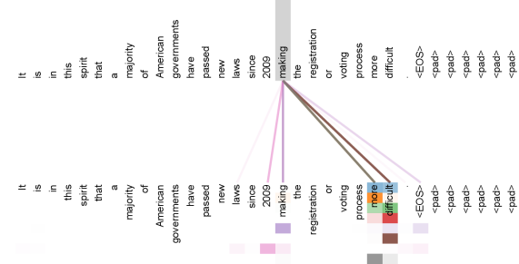

From zero knowledge → frontier-lab skills
The path nobody draws for you, drawn from scratch.
Frontier AI labs hire people who can do one specific, valuable thing extremely well. This course turns Vladimir Feinberg's dense field-guide into a ladder you can actually climb — assuming you know nothing today. We start with "what is an LLM," and end with you writing GPU kernels and deriving scaling laws.
Start with the big pictureThe Big Picture, and the Path Ahead
A handful of companies are building the most powerful AI on Earth, and they hire from a tiny pool of people who seem impossibly far ahead of you. This course is a ladder from knowing nothing to having one real, hireable skill — and by the end of this module you'll know exactly which rungs you're going to climb.
Let's be honest about the dream up front. You want to work at a frontier lab — a place like OpenAI, Anthropic, or Google DeepMind that builds the most capable AI models in the world. It sounds out of reach, and the usual advice ("get a PhD, publish papers, know the right people") sounds like it was written for somebody who is already most of the way there. So this course does something different. It assumes you are starting from zero — no advanced math, no machine-learning background, no idea what a GPU does — and it walks you, one careful step at a time, to a place where you can show a lab a specific skill they actually need.
That last sentence is the whole strategy, and we'll come back to it again and again.
0.1 How to use this course
Think of this as a ladder. Each module is one rung, and the rungs are in order on purpose — later ones lean on earlier ones. You do not need to rush. You need to understand. Read a module, take the little quizzes (they are there to catch gaps, not to grade you), and don't move on until the checkpoint box at the end feels true.
Here is the journey, start to finish, so the path doesn't feel like a fog:
Don't worry that half those words are unfamiliar — that's the point of the climb. Right now "kernels," "quantization," and "JAX" are just labels on doors we haven't opened. By the time you reach each one, it will feel ordinary. For this opening module, you only need the shape of the journey and the mindset to make it.
0.2 Who wrote the map we're following
This course is built on an essay by Vladimir Feinberg, a machine-learning researcher who works on exactly the kind of cutting-edge AI systems we're aiming at. He wrote down, plainly, how someone breaks into this field — and he's generous about crediting the people who taught him along the way, including his advisor Kai Li, whose class he points to as formative. (If you want to see the kind of work he does, he also has a public lecture on "pretraining," the giant first training run that creates a model from scratch — more on that at the very end of the course.)
Before any of the technical advice, Vlad gives two life-principles that he says made the whole difference. They are simple, they cost nothing, and they are the right frame for everything that follows.
Principle 1 — re-aim every six months. Roughly twice a year, stop and ask: What do I actually want to accomplish, and where do I want to be? Then make your next few months point at that. Vlad calls this "locally optimizing" — you don't need a perfect ten-year plan, you just need to keep nudging yourself toward the goal, one short stretch at a time.
Analogy
It's like hiking toward a mountain in fog. You can't see the summit, so you don't plot the whole route. You just make sure each hour you're walking uphill toward the peak, and you check your compass now and then. Over a year of those checks, you've climbed a mountain.
The second principle is about the unglamorous work that real progress is made of:
"I never turned up my nose at 'menial' work. If you found the right place to dig for gold, just keep digging. Don't complain about the dirt."— Vladimir Feinberg
Read that twice. It's the difference between people who make it and people who stall. Almost all valuable work has tedious parts — debugging the same error for the fifth time, re-running an experiment, reading documentation that should have been clearer. The people who break in are the ones who treat that dirt as part of the gold, not as an insult. If you've picked the right thing to work on (and this course is about picking the right thing), then the boring middle is where the value is buried. Keep digging.
Check your understanding
What does "locally optimizing" mean in Vlad's first principle?
0.3 Why these jobs are so hard to get
Let's not sugar-coat it. Frontier-lab jobs are among the hardest in the world to land, and the reason is simple competition. There is always a small, intense group of people at the very front of the line.
Concept
The vanguard
A "vanguard" is the leading edge of an advancing group — the ones out in front. In this field it means a cohort of elite students, both undergraduates and PhDs, who already publish machine-learning research, win international math and programming competitions, and have personal connections to the labs. They are formidable, and they are who you're standing next to in line.
Here's a telling detail from Vlad's essay. This same top cohort doesn't always chase the same prize. A decade ago, the most sought-after destination for these students was quantitative finance — trading firms like Jane Street and Citadel, where math talent paid spectacularly. The talent didn't change; the magnet did. In Vlad's words, "years ago, this cohort would be scooped by Jane Streets and Citadels; more recently it is OpenAI and Anthropic and GDM" (that last is short for Google DeepMind).
Good to know
The point of naming the vanguard is not to scare you off. It's to be honest about who else is in the room, so that the strategy in this course makes sense. Trying to out-compete the vanguard head-on, at their own game, on their timeline, is a losing move for almost everyone. The good news: you don't have to. We'll see why.
0.4 The three traits that actually predict success
When Vlad looks at the people who make it, he finds three traits underneath the résumés. None of them is "was born a genius." All three can be grown deliberately. Learn these three words — you'll measure yourself against them for the rest of the course.
Trait 1
Intent
Intent means deliberately picking one high-value problem to point yourself at, instead of drifting. The people who succeed didn't try to be good at everything — they chose a specific, valuable problem space and aimed at it on purpose. Intent is what turns scattered effort into a direction.
Trait 2 — the master key
Mathematical maturity
Mathematical maturity is not "memorizing formulas." It's general problem-solving ability — the skill of taking a vague, open-ended, never-seen-before problem and working it down to an answer. As Vlad puts it, "generalized problem solving is the key tool for ambiguous domains." Real research is exactly that kind of ambiguous, so this trait is the master key that unlocks the rest.
Trait 3
Grit
Grit is the stamina to push through difficulty that doesn't quit. The successful cohort survived what Vlad calls "the soul-crushing difficulty and workload that technically rigorous, proof-based classes put you under." Grit isn't about being miserable for its own sake — it's the proven ability to keep going when a problem is genuinely hard and slow.
Notice how these three fit together. Intent chooses the right mountain. Mathematical maturity is the all-terrain climbing ability that works on any mountain. Grit is the willingness to keep climbing when the slope gets brutal. A lab is, in effect, hiring for these three things — and the rest of this course is a way to build and then demonstrate them.
Analogy
Think of "mathematical maturity" like general athletic fitness rather than knowing one sport. A genuinely fit person can pick up tennis, rowing, or climbing fast, because the underlying engine — strength, stamina, coordination — transfers. Proof-based math builds that underlying engine for thinking. That's why it's the master key: it transfers to problems you've never seen.
Check your understanding
Why does Vlad call mathematical maturity the "key tool for ambiguous domains"?
Check your understanding
What does "grit" mean in this context?
0.5 If you're just starting college
If you're early in college, you have a rare gift: time, and an environment built for hard learning. The single best move is to deliberately join that vanguard cohort — not by being the loudest, but by training the traits above on purpose. Concretely, Vlad's advice is direct:
- Take difficult, proof-based classes. A "proof-based" class is one where you don't just compute an answer — you have to argue, step by careful step, why something must be true. That's the gym where mathematical maturity is built.
- Code, constantly. Writing programs is how abstract ideas become things that actually run. The only way to get fluent is reps.
- Use AI aggressively — but only for things you already know how to do yourself. This one is subtle and important (next callout).
Watch out — the AI trap
It's tempting to let an AI assistant do the parts you find hard. Don't. The whole goal right now is to build the skill in your own head. If you outsource the hard thinking, the skill never forms — you just rent it, and it disappears when the tool does. Use AI to go faster at things you've already mastered (boilerplate, lookups, drafts you could write yourself). That way it's a multiplier on real competence, not a substitute for it. AI makes a strong thinker faster; it can't make a non-thinker strong.
What does this intensity actually feel like? Vlad is candid that the people who make it often give up weekends and nights for a stretch — but read that the right way. The aim is not to suffer, and it is certainly not to glorify burnout. The aim is to spend concentrated time learning to build thought itself: training your brain to reason abstractly, hold hard ideas in your head, and not flinch from difficulty. It's the same logic as training for a sport — you choose hard sessions on purpose because that's what makes you stronger, and you also rest so you can keep going. Deliberate, sustainable intensity. Not a race to exhaustion.
And if you're not in college, or you're past it? You haven't missed the boat. The traits — intent, problem-solving, grit — can be trained anywhere, and the main path this course teaches (next section) is open to anyone willing to do the work. The college advice above is just one on-ramp, not the only one.
0.6 The way in — for everyone
Now the most important idea in this whole course, and the reason you should feel genuinely optimistic. You do not have to beat the vanguard at the impossible center of the field. You don't have to train a giant model from scratch (which costs tens of millions of dollars and is locked inside the labs anyway). There is a far more reliable way in, and Vlad states it plainly:
"The most obvious way to get hired by a lab is to demonstrate that you have a specific skill that the lab requires."— Vladimir Feinberg
One specific, valuable, demonstrable skill. Not "be generally impressive." Not "out-genius everyone." Pick a real skill that a lab genuinely needs, get unusually good at it, and build something visible that proves it. That single proof can be louder than any résumé — because it is the work, done.
Key idea — the thesis of the whole course
The reliable path is not to attack the center. It's to build one specific, valuable skill at the edges of how AI models are built and run — places where the cost of entry is low but the impact on a lab is high. Get so good at an edge that a lab wants to pull you in.
What exactly are these "edges," and why are they the soft spot in an otherwise impossible wall? That's a big enough idea to deserve its own module. Module 03 — "The Stack & Why the Edges Win" — opens up how an AI model actually runs as a stack of layers, and shows precisely where an outsider can stand and contribute. Everything between here and there builds the foundations you'll need to understand it.
✓ Checkpoint — you should now be able to…
- Describe the shape of this course: foundations → the edges → kernels & quantization → agents → hands-on JAX → scaling & a hiring plan.
- State Vlad's two life-principles: re-aim every ~6 months, and "don't complain about the dirt."
- Name the three success traits — intent, mathematical maturity, grit — and say what each one does.
- Explain why you should use AI only for what you can already do yourself.
- Say the thesis in one breath: don't attack the center — demonstrate one specific, valuable skill at the edges.
You've got the map and the mindset. Next we open the first door and learn, in plain English, what a language model actually is and how it works. Turn the page — let's start digging.
Foundations I — What an LLM Actually Is
Before you can work at the edges of the AI stack, you need to know what sits in the middle. By the end of this module you'll understand what a language model really is — not by magic, but as a concrete machine made of numbers, layers, and one surprisingly simple idea.
Everyone talks about LLMs — ChatGPT, Claude, Gemini — as if they think. They don't, at least not the way you do. Underneath, an LLM is a very large piece of math that does one thing extremely well. This is the most-read page in the course, so we'll go slowly and define every word before we lean on it. No calculus. No prior machine-learning knowledge. Just intuition, built one brick at a time.
1.1 What is a "model"?
Start with the most basic idea. In machine learning, a model is just a function — something that takes an input and produces an output. You give it a question, it gives you an answer. Nothing mystical so far.
What makes the function special is that it has a huge number of tunable numbers inside it. These numbers are called weights (or parameters). A modern model can have millions, billions, even hundreds of billions of them. Each weight is just a number, like 0.0421 or −1.7. On their own they mean nothing. Together, they determine exactly how the input gets transformed into the output.
Analogy
Picture a giant recording-studio soundboard with a billion little knobs. Turn the knobs one way and the music comes out muddy; turn them another way and it sounds crisp and clear. A model is that soundboard. The "knobs" are the weights, and the whole game is finding the settings that make the output good.
So who turns the knobs? Not a human — there are far too many. Instead, the model learns its weights from data. We show it millions of examples, and an automatic procedure nudges every weight a tiny bit, over and over, until the outputs start to look right. That nudging process is called training, and we'll come back to it. The key takeaway for now:
Key idea
A model is a function with a huge number of adjustable numbers (weights) inside it. "Learning" means automatically tuning those numbers from data until the function produces good outputs. That's it — there is no hidden ghost, just numbers being tuned.
1.2 What is a neural network?
The specific kind of function used in modern AI is called a neural network. The name sounds biological, but you don't need biology to get it. A neural network is built from layers of very simple math stacked on top of each other.
What math? Honestly, almost the simplest possible. Inside a layer, the network does three things to the numbers flowing through it:
- Multiply — scale each incoming number by a weight.
- Add — sum the scaled numbers together.
- Squash — pass the result through a simple bending function that adds a gentle curve (so the network isn't just one big straight-line equation).
That "squash" step matters more than it looks. If you only ever multiply and add, then stacking a hundred layers gives you exactly the same power as one layer — straight lines stacked on straight lines are still a straight line. The squash (researchers call it a nonlinearity) puts a bend in each layer. Stack many bent layers and the network can fold and shape its input into almost any pattern you can imagine.
Analogy
Think of folding paper. One fold is simple. But fold it, turn it, fold again, dozens of times, and you can produce astonishingly intricate shapes. Each layer of a neural network is one fold. The depth — many layers stacked — is where the richness comes from. This is why we say models are "deep," and why the field is called deep learning.
1.3 Tokens and the one big idea: next-token prediction
Now we get to language. A neural network only understands numbers, but text is made of letters and words. So the first step is to chop the text into pieces and turn each piece into a number. Those pieces are called tokens.
A token is usually not a whole word — it's a word-piece. Common words like "the" might be one token, but a longer word like "unbelievable" might be split into pieces such as "un", "believ", "able". Spaces, punctuation, and even parts of code all become tokens. The model is handed a vocabulary of tens of thousands of possible tokens, and every token has its own ID number.
Good to know
Why word-pieces and not whole words? Because there are too many possible words (and typos, and names, and made-up terms) to list them all. Breaking text into reusable pieces lets the model spell out any word, even one it has never seen, by combining pieces it knows.
Here is the single most important sentence in this whole module. An LLM is trained to do exactly one task:
Key idea
Next-token prediction. Given a sequence of tokens, predict the next token. That's the entire training objective. The model reads "The capital of France is" and learns to put high probability on the token "Paris."
It sounds almost too simple to be powerful. But think about what it takes to predict the next token well across the entire internet. To guess the next word in a math proof, you need to do the math. To finish a line of code, you need to know how the code works. To continue a story sensibly, you need to track characters and plot. The objective is simple, but to get good at it the model is forced to absorb an enormous amount of structure about the world. That apparent intelligence is a side effect of getting very, very good at one prediction task, at massive scale.
Crucially, the model doesn't output one word with certainty. It outputs a probability for every token in its vocabulary — a long list of likelihoods. "Paris" might get 90%, "Lyon" 2%, "Rome" 0.5%, and so on. A separate step then picks from that list to produce the actual next token. The model itself only ever computes the odds.
Training vs. inference
These two words come up constantly at a lab, and they are easy to mix up. They are completely different activities.
| Phase | What happens | Cost & frequency |
|---|---|---|
| Training | The weights are learned. The model reads trillions of tokens of text, guesses each next token, sees how wrong it was, and nudges every weight to do better. Done once (per model). | Enormously expensive — huge clusters of chips running for weeks or months. |
| Inference | The trained model is simply used. Weights are frozen. You give it tokens, it predicts the next one, again and again. This happens every time you chat with it. | Much cheaper per run, but happens billions of times — so speed here is everything. |
Watch out
A common myth: "the model keeps learning while I chat with it." It doesn't. During inference the weights are locked. The model isn't memorizing your conversation into its parameters — it's just running the same frozen function on new input. Learning only happens during training, which is a separate, offline, expensive process.
Why does this distinction matter for you? Because the speed-up work you'll learn later — the highly paid, in-demand "edge" skill — is almost entirely about making inference fast and cheap. You optimize the trained model being used billions of times. You don't need a lab's budget to practice that; you only need to run a model once and time it.
Check your understanding
An LLM is trained to do which single task?
Check your understanding
Which statement about tokens is correct?
1.4 The transformer: the shape of a modern LLM
So far we have a stack of layers that does next-token prediction. But what's the exact arrangement of those layers? Today, nearly every serious LLM uses one architecture: the transformer. (The "T" in GPT stands for "transformer.") You don't need to build one to get hired at the edges, but you need a clear mental picture of how it flows.
Here's the journey of your text through a transformer, end to end:
- Tokenize. Your text is chopped into tokens (we just covered this).
- Embed. Each token ID is looked up and turned into a list of numbers called an embedding — a vector. Think of it as the token's coordinates in a high-dimensional "meaning space," where tokens with similar meanings sit near each other.
- Transformer blocks. The embeddings flow through a tall stack of identical blocks. Each block lets the tokens share information with one another and then refine their own representation. The block at the top of the stack understands the text far more richly than the one at the bottom.
- Predict. After the final block, the model converts the top token's refined representation into that probability list over the whole vocabulary — the next-token prediction.
Inside each block, two things happen. First, an operation called attention lets every token look at the others and gather context. Second, a small ordinary neural network (multiply-add-squash, like §1.2) refines each token on its own. That first part — attention — is the heart of the whole machine, and it's where we go next.
1.5 Attention — the key operation
Why do tokens need to "look at" each other at all? Consider this sentence:
"The trophy didn't fit in the suitcase because it was too big."— a classic ambiguity
What does "it" refer to — the trophy or the suitcase? You know instantly it's the trophy (the trophy is big; that's why it doesn't fit). For the model to predict well, the token "it" must reach back through the sentence and pull in information from "trophy." That reaching-back is exactly what attention does: each token looks at the other tokens and pulls in the information it needs.
Analogy
Imagine each word in the sentence holding up a little sign. The word "it" calls out a request: "I'm a pronoun — who here is a big object I might refer to?" Every other word shows what it has to offer. "Trophy" is the best match, so "it" mostly listens to "trophy." Attention is this matchmaking, done with numbers.
Query, Key, Value
To do that matchmaking, the model gives every token three vectors — together called Query, Key, and Value — all computed from the token's current embedding:
- Query (Q) — "What am I looking for?" The word "it" emits a query meaning roughly "a large physical object."
- Key (K) — "What do I offer?" The word "trophy" advertises a key meaning roughly "I'm a large physical object."
- Value (V) — "What will I pass along if you pick me?" The actual information a token hands over once it's been attended to.
The mechanism, in plain steps: a token takes its Query and compares it against every token's Key. A good match scores high. Those scores are turned into weights that add up to 1 (using softmax, defined in a moment). Finally, the token takes a weighted sum of all the Values — listening loudly to good matches, quietly to poor ones. The result is the context it was missing.
The real formula
That entire process is captured by one famous equation. Don't be scared of it — you already understand every step it describes. We'll name each symbol right after.
Reading it piece by piece:
- Q (Query) — the "what am I looking for" vectors, one per token. Stacked together they form the matrix Q.
- K (Key) — the "what do I offer" vectors, one per token, stacked into K.
- V (Value) — the "what I'll pass on" vectors, one per token, stacked into V.
- Q K⊤ — the heart of the match. The little ⊤ means "transpose," a bookkeeping flip so the shapes line up to multiply. The result is a dot product between each Query and every Key. A dot product is large when two vectors point the same way and small when they don't — so it's a natural similarity score. Big number = "this Query and this Key are a great match."
- ÷ √dk — we divide by the square root of dk, the length of each Key vector (its number of dimensions). Why? In long vectors the dot products can grow into very large numbers, which makes the next step (softmax) lopsided and unstable — it would slam all the weight onto a single token. Dividing by √dk rescales the scores to a sensible range. This is the "scaled" in "scaled dot-product attention."
- softmax(…) — takes that grid of scores and turns each token's row into clean weights: every weight is between 0 and 1, and they all add up to 1. (More on softmax just below.)
- … V — finally, multiply those weights by the Values. That's the weighted sum: each token's output is a blend of all the Values, dominated by the tokens it matched most strongly. Out comes the gathered context.
What softmax does
Softmax is a small function worth knowing by name, because it shows up everywhere in this field. It takes a list of raw scores (which can be any size, even negative) and converts them into a probability distribution: all the outputs are positive, and they sum to exactly 1. Bigger inputs get bigger shares, but every input keeps a nonzero slice.
Watch out
Softmax does not just "pick the maximum." A hard max would hand 100% to the single top score and 0% to everything else. Softmax is the soft version: the winner gets the biggest weight, but the others still get a small share. That softness is essential — it lets a token blend information from several others, and it's what makes the model trainable in the first place.
Optional deep dive: shapes, dₖ, and why √ specifically advanced
If a sequence has n tokens and each Query/Key has dimension dk, then Q and K are each n × dk matrices, so Q K⊤ is an n × n grid — one similarity score for every pair of tokens. That n × n grid is exactly why attention gets expensive: double the tokens and you roughly quadruple the work and memory. Hold on to that fact — it is the entire reason Flash Attention exists (Module 05).
As for √dk: if the entries of Q and K behave like independent random numbers, the dot product of two length-dk vectors grows in size proportionally to √dk. Dividing by √dk cancels that growth, keeping the scores in a stable range no matter how big the vectors are.
Check your understanding
What does the attention operation actually compute for a given token?
Check your understanding
Why divide the Q K⊤ scores by √dk before the softmax?
1.6 Why these foundations are your edge
Here's the payoff, and the through-line of the whole course. Look back at what attention requires: every token compares against every other token, producing a grid of scores, a softmax, and a giant weighted sum — repeated in every block, for every token, billions of times during inference. Attention is the single most expensive operation in an LLM.
That expense is an opportunity. In Module 04 you'll learn about kernels — the low-level code that makes a model's math run fast on a chip. In Module 05 you'll meet Flash Attention, a famous, specific kernel whose entire job is to make this exact attention operation dramatically faster and more memory-efficient. The whole model is the thing kernels speed up; attention is the juiciest target.
Key idea
Everything in this course builds on what you just learned. The "edges" where you can get hired — making models run fast (kernels, Flash Attention) and using them cleverly (agents) — all operate on this exact machine: tokens, embeddings, transformer blocks, and attention. Master these foundations and the edge skills stop looking like magic and start looking like engineering.
You don't need a frontier lab's budget to understand or optimize any of this. You need to understand the machine — which you now do — and then go deep on one edge. That's the plan, and it starts here.
✓ Checkpoint — you should now be able to…
- Explain what a "model" is: a function with billions of tunable weights, learned from data.
- Say what a neural network does in a layer (multiply, add, squash) and why depth matters.
- Define a token and state the one training objective of an LLM: next-token prediction.
- Tell training apart from inference, and say why the weights are frozen during a chat.
- Trace text through a transformer: tokens → embeddings → blocks → next-token probabilities.
- Explain attention in plain English, name Q, K, and V, and say what softmax does.
- State why attention is the expensive operation that kernels and Flash Attention optimize.
Next, we'll build a little more of the toolkit you need — and then we head straight for the edges, where your job hunt actually gets won.
Foundations II — How the Hardware Thinks
Every speed trick in this course comes from one simple habit: do a little arithmetic on the back of an envelope and ask "what is actually slowing this down — the math, or moving the data?" By the end of this module you'll be able to answer that question yourself, and that single skill is most of what a lab pays you for.
In the last module you learned that the most direct way into a frontier lab is to work at the edges of the stack — and that the edge right below the model is the kernel: code that makes the model's math run fast on the chip. But to write fast code, you first have to understand what the chip is doing and where it gets stuck. That's this module. We assume you know nothing about hardware. We'll build the whole mental model from zero, and it will pay off for the rest of the course.
Key idea
"Thinking like a systems engineer" is not about memorizing chips. It is a habit of estimation: count the math, count the bytes you move, and see which one is the bottleneck. The whole module teaches you that one move.
2.1 Why a normal computer is too slow
Your laptop has a CPU — a Central Processing Unit, the "brain" of an ordinary computer. A CPU is a brilliant generalist: it can run your web browser, your music, and your spreadsheet, switching between very different tasks cleverly and quickly. To do that it has a small number of powerful cores — think of a handful of expert professors, each able to solve any problem you hand them, one at a time.
A large language model does something very different from a spreadsheet. Under the hood it is mostly one operation repeated billions of times: multiply a number, add it to a running total, repeat. The same simple operation, on mountains of different numbers. A handful of brilliant professors is the wrong tool for that. You don't want a few geniuses; you want an army.
Concept
The accelerator (GPU / TPU)
An accelerator is a chip built for exactly this army-of-workers job. A GPU (Graphics Processing Unit) packs thousands of small, simple arithmetic units that all do the same operation on different pieces of data at the same time. That "everyone does the same step at once" pattern is called massive parallelism. A TPU (Tensor Processing Unit) is Google's own version of the same idea, designed from the ground up for neural-network math.
Analogy
A CPU is four professors solving hard, varied problems one by one. A GPU is a stadium of ten thousand schoolkids, each handed one tiny multiplication. For "do this exact sum on a billion numbers," the stadium wins by a mile. That's why labs run on GPUs and TPUs, not laptops.
GPUs were originally invented to draw video-game graphics — colouring millions of pixels at once is the same "same operation, different data" shape — which is why the name still says "graphics." It turned out the math that paints a screen is the same kind of math that runs a neural network, and the whole AI revolution rode in on that coincidence.
2.2 Counting the work: FLOPs
To reason about speed we need a unit for "how much arithmetic." That unit is the FLOP — a FLoating-point OPeration. One FLOP is one piece of arithmetic on numbers with decimal points: a single multiply, or a single add. ("Floating-point" just means a number that can have a fractional part, like 3.14, as opposed to a whole number.)
The word does two jobs, and keeping them straight matters:
- Total FLOPs = how much arithmetic a computation needs. A bigger model, or a longer prompt, needs more total FLOPs. This is a property of the job.
- FLOPs per second (often written FLOP/s) = how fast a chip can do arithmetic. This is a property of the chip. A big accelerator is rated for trillions of FLOP/s.
If arithmetic were the only thing that mattered, predicting runtime would be trivial: time = total FLOPs ÷ FLOPs-per-second, and you'd be done. The whole rest of this module exists because that formula is usually wrong — and understanding why is the entire skill.
Good to know
You'll hear "teraFLOP/s" (trillions per second) and "petaFLOP/s" (thousands of trillions). Don't memorize chip numbers — they change every year and quoting a wrong spec in an interview looks worse than admitting you'd look it up. What's permanent is the reasoning, not the digits.
2.3 The memory hierarchy — the one mental model to keep
Here is the idea that, once it clicks, changes how you see every computation for the rest of your career. The chip can only do arithmetic on numbers that are right next to its math units. But there isn't room next to the math units to hold a whole model. So numbers live in different places, and those places trade size against speed.
- SRAM — tiny, on-chip memory (this includes the chip's registers and small fast caches). It sits microscopically close to the math units, so reaching it is nearly instant. But it's small: only a sliver of your data fits at a time.
- HBM — High-Bandwidth Memory, the large off-chip pool stacked beside the accelerator. This is where the model's weights and intermediate results actually live. It is much bigger — but reaching it is far slower than reaching SRAM, because the data has to travel.
Analogy: the desk and the warehouse
Picture yourself working at a small desk (that's SRAM). Only a few papers fit on it, but anything on the desk you can read and scribble on instantly. Everything else is stored in a giant warehouse down the road (that's HBM). The warehouse holds everything — but every time you need a folder that isn't on your desk, you walk there and back, and that trip costs real time. All the actual work happens on the desk. The warehouse just stores things.
2.4 Memory bandwidth: how wide the road is
How costly is the trip to the warehouse? That's measured by memory bandwidth: how many bytes per second you can move between HBM and the chip. (A byte is just a small chunk of data; one decimal number typically takes 2 or 4 bytes to store.) Bandwidth is the width of the road between desk and warehouse — how much you can carry per trip.
Here is the punch that surprises every beginner: on real accelerators, the math units are so fast and so numerous that they often finish their work and then sit idle, waiting for the next load of data to arrive over that road. The road, not the math, is the limit. As the JAX "scaling book" puts it, a chip rated for hundreds of trillions of operations per second "can just as easily do a tenth of that if it's bogged down moving parameters around in memory."
2.5 The big fork: compute-bound vs memory-bound
Every computation, when you run it, is limited by one of two things. Naming which one is the first question a systems engineer asks.
| Regime | What's the bottleneck? | Desk-and-warehouse picture |
|---|---|---|
| Compute-bound | The math units themselves — they're maxed out doing arithmetic. | Your desk is piled with work; you're scribbling as fast as you can. The road is fine. |
| Memory-bound | Moving the data — the chip starves waiting for bytes from HBM. | You finish each page in a blink, then stand idle waiting for the next folder to arrive from the warehouse. |
The reason this matters so much in practice: most of the work in serving an LLM — generating text one token at a time — is surprisingly memory-bound. To produce each new word, the chip must drag the model's enormous pile of weights out of HBM, do a relatively small amount of math with each weight, and throw it away. The trip dominates; the math is almost an afterthought. The chip spends most of its life waiting on the road, not computing.
Watch out
Beginners assume "faster chip = faster model," and reach for more FLOP/s. But if your job is memory-bound, buying more math units does nothing — the new units just wait on the same road too. You'd need a wider road (more bandwidth) or you'd need to make fewer trips. Knowing which lever to pull is the difference between a real engineer and someone guessing.
2.6 Arithmetic intensity: the number that decides it
So which regime are you in? There's one ratio that tells you, and learning to estimate it in your head is the heart of this whole module.
Concept
Arithmetic intensity
Arithmetic intensity is how much math you do per byte you fetch from HBM — FLOPs done divided by bytes moved. It measures how much useful work you squeeze out of each trip to the warehouse.
Read it as a productivity score for every warehouse trip:
- High arithmetic intensity → you do lots of math on each fetched byte → the math units stay busy → you're compute-bound (good — the chip is well used).
- Low arithmetic intensity → you do little math per fetched byte → the math units idle, hungry for the next load → you're memory-bound (the chip is starving).
Let's make it concrete with the back-of-the-envelope move Vlad says you should be able to do "in your sleep." Take generating one token, where the core step is multiplying the model's big weight grid by a single vector of numbers.
A worked back-of-envelope: why one-token decoding is memory-bound do this in your sleep
Say a weight grid has N × N = N2 numbers in it. To use them for one token you must:
- Move all N2 weights from HBM. If each number takes 2 bytes (a common choice; illustrative), that's about 2N2 bytes over the road.
- Compute with them: each weight gets one multiply and one add, so roughly 2N2 FLOPs.
Now the ratio: arithmetic intensity ≈ 2N2 FLOPs ÷ 2N2 bytes ≈ 1 FLOP per byte. That is tiny. You fetched every weight just to touch it once. The chip — which can do hundreds of FLOPs in the time it takes to fetch one byte — is starved. So decoding one token at a time is firmly memory-bound, and the fix is to do more math per fetched weight (for example, by handling many requests together so each fetched weight serves many of them at once). You just reasoned about real hardware with one line of algebra. That is the skill.
Check your understanding
A computation has low arithmetic intensity — only about 1 FLOP for every byte it pulls from HBM. What is it, and what would actually speed it up?
2.7 The roofline model: a picture of the bottleneck
Engineers draw all of this in one tidy picture called the roofline model. It plots how fast your operation can possibly run (up the side: achievable FLOP/s) against its arithmetic intensity (along the bottom). The result looks like the roofline of a house, and where your operation lands on it tells you instantly what's holding it back.
Read the picture left to right. An operation with low intensity sits on the rising, slanted part — the memory roof — and the only way it goes faster is a wider road (more bandwidth) or higher intensity (shoving it rightward). An operation with high intensity bumps into the flat compute roof at the top: it's using the chip's full math power, and the only way faster is a faster chip. The corner where the two roofs meet is the sweet spot Reiner Pope calls being "equally memory-bound and compute-bound — a really desirable place to be," because neither resource is wasted.
Check your understanding
An operation lands on the slanted part of the roofline (the rising line), well to the left of the kink. What does that tell you?
2.8 What a kernel really is — and the fusion trick
Now we can make the word kernel physical. In Module 03 you met it as "code that runs one operation fast on the accelerator." Here's the concrete truth: a kernel is the code that, for one operation, decides what data to haul out of HBM, what to keep on the desk (SRAM), and in what order to do the math — all to keep those expensive warehouse trips to a minimum. Writing a good kernel is the craft of managing the memory hierarchy you just learned.
Here's the single most important trick, and a preview of the famous one we study later. Suppose your model does operation A, then operation B, one after another. The lazy way: run A, write its result all the way back to the warehouse (HBM), then read that same result back to the desk to run B. Two pointless trips down the slow road.
Concept
Fusion
Fusion means combining operations into one kernel so the intermediate result never leaves the chip — A hands its output straight to B on the desk, skipping the round-trip to HBM. Fewer trips on the slow road means higher arithmetic intensity, which can flip a memory-bound operation toward the good, compute-bound side of the roofline.
Good to know
This is the core insight behind Flash Attention — the celebrated kernel we'll dissect in Module 05. It computes attention without ever writing the giant intermediate scores out to HBM, by keeping the working data on the desk and fusing the steps. That one idea made long-context models dramatically faster and cheaper. Hold the thought; you now understand why it works.
One more term you'll lean on constantly: the forward pass — running the model forward once, from input to output, to get a prediction (no learning, no weight changes). It's what happens every time the model answers you, and — crucially for the broke outsider — running a forward pass needs only enough hardware to use the model, not to train it. That's why one rented GPU is enough to practice everything in this module.
Check your understanding
What does fusing two operations into one kernel actually buy you?
Check your understanding
In the desk-and-warehouse picture, what is HBM?
2.9 The systems-thinking punchline (and why it gets you hired)
Step back and notice what just happened. With nothing but counting — FLOPs here, bytes there — you predicted where a real computation gets stuck and what would fix it. No PhD, no lab, no million-dollar cluster. Reiner Pope describes deriving these insights from "a handful of equations and a blackboard." Vlad puts the same idea even more plainly:
"the math involved is always simple at the face of it: a little bit of algebra will tell you if your bottleneck is communication, or flops, or memory ... Unless you tell your coding agent to watch out for latch boundedness, it will happily analyze just comms/flops/HBM rooflines ... And whatever the next physical constraint is that didn't get modeled after that."— Vladimir Feinberg
Sit with the second half, because it's the real lesson. You now have a model with three knobs — communication, FLOPs, and HBM bandwidth. That model is powerful and incomplete. Real chips have other physical limits your tidy roofline didn't include — Vlad names "latch boundedness," a low-level timing constraint inside the silicon, as one example. The point isn't that you must know that particular limit. The point is that there is always a next constraint nobody put in the model yet, and a tool (or a junior engineer) running the standard analysis will sail right past it.
Watch out — the trap that defines the job
The danger isn't bad arithmetic; it's trusting a model past its edges. Your roofline says "compute-bound," you add math units, and nothing gets faster — because the true limit was something the model never represented. The expensive skill is the reflex to ask: "what constraint am I not modeling?" — and then go measure reality to find it.
Key idea — what labs actually pay for
Anyone can run the standard roofline. The rare, hireable skill is lateral systems thinking: spotting the constraint nobody modeled yet, the bottleneck hiding one level below the obvious one. And here's the gift — you can rehearse that exact skill on a single rented GPU. Profile a real kernel, predict its bottleneck with your back-of-envelope, measure it, and chase down every gap between your prediction and reality. Each gap you explain is a constraint you just learned to see. That practiced instinct is the whole edge.
That is what "think like a systems engineer" means, and why this short module is the bedrock under everything that follows. From here on, every kernel, every speedup, every optimization in this course is just this same loop — estimate, find the bottleneck, find the bottleneck under that — applied again and again. You don't need a lab to start. You need an envelope, a GPU, and the habit.
✓ Checkpoint — you should now be able to…
- Explain why a GPU/TPU beats a CPU for LLM math (massive parallelism: thousands of units, same operation, different data).
- Define a FLOP, and keep "total FLOPs" (the job) separate from "FLOP/s" (the chip).
- Draw the desk-vs-warehouse memory hierarchy and say what SRAM and HBM each are.
- Decide whether a computation is compute-bound or memory-bound from its arithmetic intensity — and know most LLM decoding is memory-bound.
- Read a roofline plot: slanted memory roof, flat compute roof, and where a point lands.
- Say what a kernel does physically, and what fusion buys you (fewer HBM trips → higher intensity).
- State the systems-thinking punchline: there's always a next unmodelled constraint, and spotting it is the skill labs hire for.
The Stack, and Why the Edges Win
Here is the trap everyone hits: labs hire people who already have rare skills, but the skills seem to need a lab to learn. This module shows you the way out of that trap — and it is the single most important idea in the whole course.
Imagine you want to work at a frontier lab — a place like OpenAI, Anthropic, or Google DeepMind that builds the most capable AI models in the world. You quickly run into a chicken-and-egg problem:
"It seems like a catch-22: how do you get these skills and problems without already being there?"— Vladimir Feinberg
You can't get hired to train frontier models without experience training frontier models. And you can't get that experience without first being hired, because training a frontier model costs tens of millions of dollars in computer hardware that no student or hobbyist can touch. So how does anyone break in from the outside?
The answer is to stop trying to attack the center, and instead work at the edges.
3.1 The LLM stack: four layers
To see where the edges are, picture how a large language model actually runs as a stack of layers, like floors in a building. Each layer sits on top of the one below it and depends on it.
Concept
The LLM stack
The chain of layers that turns physical computer chips into a useful AI assistant. From bottom to top: the accelerators (the chips), the kernels (code that drives the chips), the LLM itself (the trained model), and the agentic loops (programs that put the model to work). A frontier lab's core business is that middle "LLM" layer — but it grows outward by expanding the layers around it.
Look at the figure. The middle layer — actually training the giant model — is locked behind enormous cost. That is the part you cannot practice from your bedroom. But the layers touching it are a different story.
3.2 Below the model: kernels
Underneath the LLM sit kernels. A kernel is a small, carefully written piece of code that performs one chunk of the model's math on the chip — and performs it fast. The model is just a huge pile of math; kernels are what make that math actually run at a practical speed on real hardware.
Analogy
If the LLM is a recipe, the kernel is the chef's knife technique. The recipe (the math) can be written by anyone, but a master's knife skills are what get dinner out before midnight. Labs are desperate for people with great "knife skills."
Here is the beautiful part: to practice kernel work, you only need enough hardware to run the model once (a "forward pass"), not to train it. That's cheap — a single rented GPU. And you get instant feedback, because "did it get faster?" is just a stopwatch. We devote three whole modules to this path because it is, in the author's words, "the most direct path into the labs."
3.3 Above the model: agentic loops
On top of the LLM sit agentic loops. The idea: treat the finished model as a grey box — you don't open it up or retrain it, you just feed it inputs and use its outputs cleverly, often in a loop, to get useful work done.
# "Above the stack": we never touch the model's internals.
# We just call it, check the result, and loop. That's an agentic loop.
idea = "a faster sorting method"
for step in range(100):
candidate = llm(f"Improve this idea: {idea}") # call the grey box
score = evaluate(candidate) # test it in the real world
if score > evaluate(idea):
idea = candidate # keep what works, repeatWatch out
"Agent work" here does not mean casually using ChatGPT or writing a config file. It means running careful, controlled experiments on how one or many models behave. The bar is real science.
3.4 Why the edges are your way in
Frontier labs naturally grow into these neighbouring layers, because a better kernel makes every product cheaper and a better agent loop makes the model more useful. So the edges are where the labs expand their hiring — and they are exactly the areas that don't require training an LLM, yet still push the frontier forward.
Key idea
The way out of the catch-22 is to demonstrate one specific, valuable skill the lab needs — built at the edges of the stack, where the entry cost is low but the impact is high. You don't sneak into the center. You become so good at an edge that they pull you in.
| Path | What it costs you | Can you practice it alone? |
|---|---|---|
| Attack the center train a frontier model | $10M+ of compute, a team, lab access | No — gatekept |
| Work the edges kernels & agent research | One rented GPU, your time, grit | Yes — and that's the whole point |
Why does the lab even care about an outsider's kernel? context
Because a single well-known speedup, shared as an open-source project, can save a lab millions of dollars in running costs and get adopted across the whole industry. That public artifact is louder than any résumé — it's proof you can do the exact work they need. Several famous lab hires started as exactly this kind of outside contribution.
Check your understanding
Why can a student realistically practice "kernel work" but not "training a frontier model"?
Check your understanding
What does it mean to use an LLM as a "grey box" in an agentic loop?
✓ Checkpoint — you should now be able to…
- Draw the four-layer LLM stack from memory and point to the two "edges."
- Explain the catch-22 of lab hiring and the way out of it in one breath.
- Say why kernels (below) and agentic loops (above) are practiceable without a lab's budget.
- Recognise that your goal is to build one demonstrable, valuable edge skill.
The rest of this course is simply that plan, made concrete. First we'll build the foundations you need (you've met some of these terms already — next we'll really understand them), then we go deep on each edge. Onward.
Kernel Work I — Systems Thinking and DSLs
You already know the edges of the stack are your way in. Now we go down to the most valuable edge of all — the one the author calls the innermost loop of everything. By the end you'll know what "kernel work" really is, how to get good at it on a single rented chip, and why a clever little programming language can be your loudest hire signal.
Last module we drew the LLM stack and found the two edges where an outsider can contribute: kernels below the model and agentic loops above it. This module zooms in on the lower edge — in the author's words, the most rewarding place to start:
"The biggest bottleneck and innermost loop of all LLM work is performance work … Every project needs people who can tune the LLMs at the kernel level. It is a skill you can pick up and is the most direct path into the labs."— Vladimir Feinberg
4.1 What "kernel work" really means
When people hear "kernel" they picture one tiny thing: hand-writing a fast matrix-multiply for a GPU. That's part of it, but the author's definition is broader. Kernel work is performance work across three connected faces:
- Actual device kernel development. Writing the low-level code that runs one chunk of the model's math directly on the chip — and runs it fast. This is the classic image of the job.
- Inference-stack innovations and CPU optimizations. Making the whole machinery that serves a finished model run faster and cheaper — how requests are batched, how data is shuffled around, how the ordinary CPU work surrounding the chip is squeezed.
- Tooling that supports R&D around this ecosystem. The profilers, compilers, mini-languages, and libraries that let everyone else do the first two faster. Build the shovel, not just the gold.
All three are "performance work," and together they are, in the author's framing, "the biggest bottleneck and innermost loop of all LLM work." Why the innermost loop? Because a model's math runs billions of times. Shave a few percent off it and you save a frontier lab real money on every query, forever. That leverage is exactly why labs hire for it.
Check your understanding
Which of these counts as "kernel work" in the author's broad sense?
4.2 How you get good: you just do it
Here is the whole method, stripped down. Plenty of models run slowly on real hardware. Pick one. Make it fast. That's the loop. The author is blunt about it:
"You just do it. … There are plenty of LLMs out there that run slowly on GPUs and TPUs. Just make them run fast. You only need enough accelerators to run a forward pass … Low level coding isn't the obstacle anymore, it's awareness and integration of details about physical accelerator devices, as well as a scientific approach to spending time where it matters."— Vladimir Feinberg
Two things make this practical for someone with no lab and no budget.
You only need one forward pass. A forward pass is running the model once — input goes in, an answer comes out — with no training, no learning, no expensive backward step. You don't need a cluster; you need enough hardware to run the model a single time. That's a single rented chip for a few dollars an hour. Speeding up that one pass is the entire game, and it's cheap to play.
The feedback is instant. Your benchmark is, almost literally, a stopwatch. Make a change, run the forward pass, read off the time. Faster or slower? You know in seconds — and tight, honest feedback like that is how skill compounds fast.
Analogy
It's like timing yourself running one lap of a track. You don't need a stadium or a coach to improve — you need the track (one forward pass) and a stopwatch (the benchmark). Run, tweak your form, run again. The clock never lies, and you get better every lap.
So what is the hard part, if not the coding? The author names it precisely. The obstacle today is not writing low-level code — your coding agent is genuinely excellent at that once you've framed the problem clearly. The real obstacles are two:
- Awareness and integration of physical accelerator details. Knowing how the actual chip behaves — its memory levels, its bandwidth, its quirks (you met HBM, SRAM, bandwidth, and the roofline in Foundations) — and weaving all those facts together into one mental picture of where time is going.
- A scientific approach to spending time where it matters. Measuring first, finding the one bottleneck that actually dominates, and fixing that — instead of lovingly optimizing a part that was never slow.
Key idea
The bottleneck in kernel work has moved. It used to be "can you write the gnarly low-level code?" Now your agent can do that. The new bottleneck — and your new edge — is knowing the hardware deeply and being scientific about where the time actually goes.
Check your understanding
Why is a single "forward pass" enough hardware to practice kernel work?
4.3 Why LLMs can't fully do this for you yet
If your agent is such a good coder, why isn't this job already automated? It's a fair question, and the answer reveals exactly where your value lives.
On the surface, the math of performance looks simple — mostly algebra over three quantities: how much the chips can talk to each other (communication), how much arithmetic there is (FLOPs), and how much data must be moved (memory). The roofline model you met in Foundations is exactly this kind of back-of-envelope algebra. On a clean, well-posed version of such a question, an agent will out-code you every time.
But real systems don't live on the back of an envelope. They connect to a messy physical world, and that messiness has two consequences:
- It rewards lateral thinking and new abstractions. The win often isn't grinding the obvious equation harder — it's noticing that the problem can be reframed, or inventing a cleaner way to think about it that nobody handed you. That's a human move, not a fill-in-the-blank one.
- There is always an unmodelled constraint. The tidy roofline says you're compute-bound, so you optimize compute — and you get nothing, because something the model never accounted for was the real ceiling.
A concrete example of that last point: latch boundedness. Sometimes performance is capped not by raw arithmetic or memory bandwidth, but by a low-level hardware mechanism — a latch — that can only admit so many operations per cycle. The naive roofline never modeled the latch, so it confidently points you at the wrong wall. Finding the true wall is the job, and it takes a human who looks past the clean model at the real device.
Watch out
A passing benchmark on a toy problem can fool you into thinking the model is "fully understood." The skill isn't solving the equation you were given — it's spotting the constraint that wasn't in the equation. That gap is precisely where a human, today, still beats the agent.
Good to know
This isn't a knock on coding agents — lean on them hard for the code. It's a division of labour: the agent writes the kernel; you bring the hardware awareness, the lateral leap, and the nose for the hidden bottleneck.
4.4 DSLs: little languages that tame the hardware
Now we reach the highest-leverage corner of kernel work, and the heart of this module. To understand it, we need one new idea: the DSL.
Concept
Domain-Specific Language (DSL)
A mini programming language built to do one job extremely well. Instead of a general language that can do anything (like Python), a DSL gives you exactly the words and rules for a single domain — and nothing else — so that domain becomes far easier to express. (A spreadsheet formula language is a DSL for tables; a query language is a DSL for databases.)
Why do kernels, specifically, cry out for their own little languages? Because kernel code is concurrent, and concurrency is brutally hard to get right.
Concept
Concurrency
Concurrency means many things happening at the same time. A GPU has thousands of tiny workers all running at once. If two of them touch the same data in the wrong order, you get a silent, intermittent bug that's nearly impossible to reproduce. Reasoning about "who does what, when, and in what order" is the central difficulty of low-level chip code.
And here's the catch: to reason about concurrency on a chip, you have to understand the hardware's scheduling guarantees — the rules the chip promises about the order in which its thousands of workers run and synchronize. Without those rules, you can't even tell whether your kernel is correct, let alone fast. (For a taste of how subtle this reasoning gets, the author has written about building a synchronization "barrier" purely from low-level primitives called semaphores — a small puzzle that shows how much care correct coordination demands.)
A good DSL is the rescue. It extracts the right abstractions — the handful of concepts that matter for this hardware — so you can reason about correctness clearly, without giving up performance. You write your intent in the little language; the DSL compiles it down to a kernel that is both correct and fast. That combination is the prize, and it's exactly what "working at the edges" looks like at its highest-impact: invent the abstraction everyone else then builds on.
Check your understanding
Why does a well-designed DSL help with kernel work?
4.5 ThunderKittens: tiles instead of threads
Let's make DSLs concrete with a real example the author calls out: ThunderKittens, a framework whose paper is cheerfully titled "ThunderKittens: Simple, Fast, and Adorable AI Kernels." The name is a joke; the idea is serious.
The problem it tackles: even hand-written, expert kernels often fail to hit the speed the hardware is theoretically capable of — and writing them is painful. ThunderKittens argues that a small set of well-chosen abstractions can recover most of the performance with far less pain.
The core abstraction is the tile. Instead of thinking about thousands of individual threads (the standard, mind-bending way), you think in small fixed-size blocks of numbers — for instance 16×16 matrix tiles — and operate on whole tiles at once, with familiar array-style operations. The framework lines its abstractions up with the GPU's own structure across three levels:
- Warp level: the 16×16 tile is the basic unit, with PyTorch-like operations over it.
- Thread-block level: templates for overlapping slow asynchronous work across groups of workers, so the chip is never idle.
- Grid level: help with hiding the costs of launching work and moving memory.
The style of thinking is the real lesson: stop reasoning about individual threads and start reasoning about tiles that map naturally onto how the GPU is built. That shift is what makes fast kernels writeable by mortals. It is a textbook DSL/abstraction win — a small, consistent vocabulary that fits the hardware, so diverse operations can be expressed cleanly instead of with ad-hoc tricks each time.
Good to know
We're describing what ThunderKittens does and the way of thinking it promotes — not quoting speedup figures. The takeaway you can carry into any interview is the principle: pick abstractions that match the hardware's real structure, and performance follows.
4.6 CuTe DSL: data layout as a first-class idea
A second example, from NVIDIA itself: the CUDA ecosystem includes a library called CUTLASS for high-performance kernels, and within it lives the CuTe DSL — a Python domain-specific language for writing those kernels. It centers on one powerful idea.
In a fast kernel, a huge fraction of the difficulty is not the arithmetic — it's how the data is laid out in memory and how it moves between the chip's slow and fast memory. (Recall from Foundations: reaching big slow HBM is expensive; staying in small fast SRAM is cheap. Getting layout and movement right is often the whole battle.) CuTe makes data layout itself a first-class thing you can name, describe, and manipulate in the language — rather than something you track painfully in your head while writing thread code.
When the way your data is shaped and shuffled becomes an explicit object the language understands, you can reason about it directly and let the tooling generate the right low-level moves. Same theme as ThunderKittens, different angle: ThunderKittens gives you the right unit (the tile); CuTe gives you a first-class way to describe layout and movement. Both hand you the right vocabulary for the hard part.
Source note
The detailed CuTe documentation page was mostly a navigation index when this module was written, and the full reference wasn't reachable, so the description above explains the general idea (a Python DSL in CUTLASS for describing data layouts and movement); verify exact APIs and syntax against the official docs.
4.7 A curated reading list
How do you actually learn this fast? You don't have to invent a curriculum. There is a well-known, curated kernel-study reading list — shared as a tweet by "Yaroslav" — that the community passes around as a starting syllabus for getting good at GPU kernels. From that list, the author specifically calls out ThunderKittens as worth studying, which is why we walked through it above.
Source note
The tweet linking that reading list wasn't reachable when this module was written (the page returned a payment-required error). We therefore describe it only as a curated kernel-study reading list and don't reproduce its specific contents — look it up directly and treat it as a living study guide rather than a fixed canon.
The reasoning these resources build is the concurrency-and-synchronization muscle from §4.4 — the same "who runs when, and is this actually correct?" thinking behind the author's own writing on building a synchronization barrier from semaphores. Expect to spend your study time there, not on syntax.
4.8 Why this is the most direct path into a lab
Tie it all back to the goal. Performance work is the inner loop of every LLM project, so labs always need it. The entry cost is a single forward pass on a rented chip. The feedback is a stopwatch. And the payoff signal is unusually loud:
Key idea
One widely-adopted open-source kernel or tool is louder than any résumé. A single artifact that real engineers actually use is undeniable proof you can do the exact work a lab needs — which is why, of all the edges, this is the most direct path in.
You don't have to ask a lab to take a chance on you. You take a slow model, make it fast with your agent and your growing hardware intuition, and ship the result where people can use it — the tile abstraction, the layout helper, the profiler everyone reaches for. That public artifact does the talking. Next module, we get our hands dirty with the concrete hardware details that turn this from a story into a skill.
✓ Checkpoint — you should now be able to…
- List the three faces of "kernel work" — device kernels, inference/CPU optimization, and supporting tooling — and say why it's the inner loop of all LLM work.
- Explain how you practice it: make a slow model fast, needing only one forward pass, with a stopwatch for feedback.
- Name the real obstacles today — hardware awareness and a scientific approach to where time goes — not low-level coding.
- Say what a DSL is and why a good one lets you reason about concurrent kernels correctly without losing speed.
- Describe ThunderKittens (tile-based thinking) and the CuTe idea (data layout as first-class) as examples of that win.
- Explain why one adopted open-source kernel beats a résumé for getting hired.
Kernel Work II — The Flash Attention Trick
This is the story the whole essay has been building toward: a single, famous speedup that made long-context models practical — and that didn't change the math one bit. By the end you'll understand why it works, and, more importantly, the way of thinking that produced it — the exact way of thinking frontier labs hire for.
You already know the pieces. You know attention and its formula. You know a GPU has two kinds of memory: a big, slow pool called HBM, and a tiny, blazing-fast scratchpad on the chip called SRAM. You know that moving data between them costs bandwidth, and that a computation can be memory-bound — limited not by how fast the chip can do arithmetic, but by how fast it can shuttle numbers in and out. And you know that a kernel is the low-level code that actually runs a piece of the model on the chip, and that fusing kernels means doing several steps in one pass to avoid extra trips to slow memory.
Now we put all of it together on one operation — attention — and watch a beautiful idea fall out. This module is the essay's flagship example of what the author calls lateral systems thinking: solving a problem not by attacking it head-on, but by stepping back and noticing a constraint nobody was looking at.
5.1 A quick reminder of what attention computes
For a sequence of N tokens (think: N words in the prompt), attention lets every token look at every other token and decide how much to "pay attention" to each one. The formula you've already met is:
Read it left to right as three steps. First, Q K⊤ — multiply the queries by the keys — produces a giant table of raw "match scores," one number for every pair of tokens. With N tokens, that table is N × N. Second, softmax turns each row of scores into clean weights that add up to 1 (so each token has a tidy "budget of attention" to spend). Third, those weights multiply the values V to produce the output. The √dk on the bottom is just a scaling constant that keeps the numbers from blowing up; you can ignore it for the intuition.
Analogy
Imagine a classroom of N students. Every student asks every other student "how relevant are you to me?" — that's the N × N table of scores. Each student then normalizes their answers into percentages (softmax), and finally takes a weighted blend of everyone's notes (the values). Attention is just "everyone consults everyone, weighted by relevance."
The thing to fix in your mind: that middle table is N × N. If your prompt has 1,000 tokens, that's a million numbers. At 100,000 tokens — ordinary for a modern long-context model — it's ten billion numbers, for a single attention layer, of which there are dozens. The size of that table grows with the square of the sequence length. Hold that thought; it's the whole problem.
5.2 The "unfused" way — and where it bleeds time
The most natural way to write attention is to follow the formula literally, one step at a time, like transcribing sheet music note for note. Compute the whole score table; store it. Run softmax over it; store the result. Multiply by V. Each "store" and each "read back" happens in the only place big enough to hold that N × N table: slow HBM. We call this the unfused implementation, because each step is its own separate kernel that hands off to the next through main memory.
Let's count the trips to slow memory — the round-trips — because that's what will hurt:
- Compute Q K⊤ → write the N × N scores to HBM.
- Read the scores back from HBM → run softmax → write the softmaxed table back to HBM.
- Read the table back again → multiply by V → write the (much smaller) output.
That enormous table makes the trip across the slow bus several times. And here's the cruel part: the actual arithmetic on each number is trivial — a multiply here, an exponential there. The chip's math units finish almost instantly and then sit idle, waiting for the next slab of the table to arrive from HBM. The operation is badly memory-bound. The bottleneck isn't computing the scores; it's hauling them back and forth.
5.3 The FLOP-only fallacy
Now here is the trap — and it's the heart of what the essay is teaching. Suppose your mental model of the hardware only counts FLOPs: floating-point operations, the raw arithmetic. By that measure, the unfused implementation looks completely fine. It does exactly the multiplies and exponentials the formula calls for — not one extra. It is, in the author's phrase, "a direct transcription of attention math." A FLOP-counter sees no waste at all.
"Modelling flops alone might steer one to believe that the unfused attention implementation that is a direct transcription of attention math might come about."— Vladimir Feinberg
So a smart engineer armed only with a FLOP model, told "attention is too slow on long sequences," reaches a reasonable-but-wrong conclusion: the math itself must be too expensive. And then they go try to change the math. They invent sparse attention (let each token look at only some others, not all) or approximate attention (estimate the score table instead of computing it exactly). These are real research areas, and sometimes they help. But they come at a cost: you've now changed what the model computes, so you have to worry about whether quality drops. People have spent years — and mountains of GPU-hours — chasing approximations to a problem that, it turns out, wasn't fundamentally about the arithmetic at all.
Key idea — the FLOP-only fallacy
If your model of the machine counts only arithmetic, the most wasteful real-world implementation can look perfectly efficient. The fix is almost never to optimize harder inside the wrong model. The fix is to add the missing variable — here, memory bandwidth — so the real bottleneck finally shows up on your dashboard.
This is the move. Don't change the math. Change the model of the hardware. Once memory bandwidth is in the picture, the problem looks utterly different — and a far better answer is sitting right there.
"By considering a new variable … such as memory bandwidth, we realize that the operation can be restructured to avoid materializing intermediate values in slow HBM memory."— Vladimir Feinberg
Check your understanding
In the unfused attention implementation, what is actually wasting most of the time?
5.4 The Flash Attention trick
Once you accept that the bottleneck is moving the N × N table in and out of HBM, the cure writes itself: never build the whole table in HBM at all. This is the idea behind FlashAttention. The math it computes is identical to before — same formula, same output, to the last decimal. What changes is the order of operations and where the intermediates live.
The technique rests on two simple moves.
Move 1 — work in tiles. Instead of computing the full score table at once, chop the queries into small blocks and the keys/values into small blocks. Now process one little block of queries against one little block of keys at a time. Each block is small enough to fit entirely inside the fast on-chip SRAM scratchpad. You load a query tile and a key/value tile up to SRAM, do all the multiplying and softmaxing for that little patch right there on the chip where it's fast, and you never write that patch of scores out to HBM. This block-by-block strategy is called tiling.
Move 2 — combine tiles with an online softmax. There's an obvious objection: softmax needs a whole row of scores to normalize it (every percentage has to know the total). If you only ever see one tile of a row at a time, how can you possibly softmax it correctly? The answer is a clever piece of bookkeeping called the online softmax: as each new tile arrives, you keep a running maximum and a running sum, and you gently rescale the partial result you've accumulated so far. When the last tile has gone by, the running totals make the answer come out exactly as if you'd seen the whole row at once. It's the same trick as keeping a running average as numbers stream past, rather than waiting to collect them all first.
Analogy
Imagine grading a giant stack of exams to find each student's share of the total points — but your desk only fits a few papers at a time. Instead of laying all thousand exams out at once (you have no room), you process a handful, keep a running tally of the highest score seen and the total so far, and adjust as you go. At the end your tallies are exactly right. The online softmax is that running tally — it lets a small desk (SRAM) do a job that looks like it needs a huge table.
Key idea — same math, fewer trips
FlashAttention is not an approximation. It computes the exact attention output. The only thing it changes is that the giant intermediate table is never materialized in slow HBM — it's produced and consumed in small tiles inside fast SRAM, and only the final, small output is written back. Same answer, a fraction of the bandwidth, a big speedup.
Stand the two figures side by side and the lesson is visual. The unfused picture is dominated by a big table sloshing across a slow bus. The fused picture moves that entire computation onto the chip and leaves the slow bus nearly empty. Nothing about the formula changed. We only changed where the intermediate numbers live — and that was the whole ballgame.
Optional deep dive: how the online softmax stays exact advanced
Ordinary softmax over a row of scores s is computed in a numerically safe way by first subtracting the row's maximum: weighti = exp(si − m) ÷ Σ exp(sj − m), where m is the max over the whole row. Subtracting m doesn't change the result; it just keeps the exponentials from overflowing.
The catch is that you seem to need the whole row to know m and the sum. The online version processes the row one tile at a time and keeps two running numbers: the max seen so far, m, and the running denominator, ℓ (a sum of exponentials). When a new tile reveals a larger max mnew, every quantity accumulated under the old, smaller max is off by a constant factor of exp(m − mnew). So you multiply the running sum ℓ and the running output by exactly that factor to "re-base" them to the new max, then fold in the new tile. Because the correction is an exact algebraic rescaling — not a rounding or a guess — the value you have after the final tile equals the value you'd get from the full-row softmax to floating-point precision. That is precisely why FlashAttention can claim to be exact rather than approximate.
If you want a feel for the shape of the code, here's a sketch of the tile loop. It is illustrative — real kernels handle padding, scaling, masking, and pipelining — but it shows the skeleton: two loops over tiles, all the work on-chip, running totals carried along.
# sketch — the FlashAttention tile loop (illustrative, not a real kernel)
for q_tile in blocks_of(Q): # a small block of queries, loaded into SRAM
out = 0 # running output for this query tile
m = -inf # running max (for the online softmax)
l = 0 # running sum of exp (the denominator)
for kv_tile in blocks_of(K, V): # stream key/value blocks past it
s = q_tile @ kv_tile.K.T # partial scores, on-chip in SRAM
m_new = max(m, s.max()) # grow the running max if needed
rescale = exp(m - m_new) # re-base old totals to the new max
p = exp(s - m_new) # exponentiate this tile
l = l * rescale + p.sum()
out = out * rescale + p @ kv_tile.V
m = m_new
write_to_hbm(out / l) # only the FINAL, small output leaves the chipwrite_to_hbm of the scores. The scores s exist only as a tiny tile inside the inner loop. The rescale step is the online-softmax correction that keeps the running totals exact as the max grows. The only thing that crosses back to slow memory is the finished output.Check your understanding
What does the "online softmax" make possible in FlashAttention?
Check your understanding
Is FlashAttention an approximation of attention?
5.5 A series of papers, riding the hardware frontier
FlashAttention isn't a single paper — it's a series. Each new entry takes the same core idea (be aware of where data lives; keep the big intermediate off slow memory) and re-engineers it for the latest generation of chips, because every new GPU shifts the balance between compute and bandwidth. The general name for this stance is IO-aware kernel design: optimize for the cost of moving data, not just the cost of computing on it.
The most recent installment in the series targets NVIDIA's newest B200 GPUs (the Blackwell generation), and — tying back to the previous module — it is written using the CuTe DSL, the Python-based language for expressing high-performance GPU kernels that evolved out of NVIDIA's CUTLASS library. The fact that a state-of-the-art kernel is now authored in CuTe is a strong signal: it's exactly the toolchain you read about in Module 04, used on the literal frontier. Learning it is not academic.
Source note
The specific paper for the newest FlashAttention installment could not be reliably verified when this module was written (its identifier appears future-dated). So the description here teaches the stable, well-established FlashAttention idea — IO-awareness, tiling, and the online softmax — which is settled knowledge. Treat any version-specific details (exact authors, benchmark numbers, the precise feature list of the latest release) as things to confirm against the paper itself; this module deliberately does not quote figures it could not check.
Good to know
Why re-do it for every chip? Because hardware keeps moving the bottleneck. A new GPU might double its arithmetic throughput but grow its memory bandwidth far less, which makes being IO-aware more important, not less. The algorithm is stable; the engineering that wrings peak performance out of each new chip is a fresh, valuable problem each time — and those problems are precisely what labs pay for.
5.6 The meta-lesson — the skill that actually gets you hired
It's tempting to file FlashAttention away as "a clever trick I now know." Resist that. If you walk away memorizing only the trick, you've missed the lesson — and the author is blunt about this. The point of the story is not tiling or online softmax. The point is the move that found them: noticing that the model everyone was optimizing within (count the FLOPs) was missing a variable (memory bandwidth), and that adding it dissolved the problem.
"The important part is identifying unmodelled constraints on system performance, which can always be done by zooming out and viewing a system … more holistically."— Vladimir Feinberg
Read that twice. The transferable skill is identifying the unmodelled constraint — the real bottleneck nobody had on their dashboard — by stepping back and looking at the whole system instead of grinding away inside one corner of it. Memory bandwidth was the unmodelled constraint here. In your next problem it will be something else: a synchronization stall, a data-loading pipeline, a network hop, a cache that keeps getting evicted, a humble copy that quietly dominates the runtime. There is always a next constraint. The engineer who can find it — not the one who memorized last year's trick — is the one a frontier lab wants.
Watch out
Even if you already know the flash-attention trick, don't be dismissive in an interview or a discussion. Reciting the answer signals you read a blog post. Explaining how someone would have found it — by widening the performance model until the true bottleneck appears — signals you can do the work on a problem nobody has solved yet. That second thing is the rare, hireable skill.
Key idea — the whole module in one line
Don't optimize harder inside a model that's missing a variable. Zoom out, find the unmodelled constraint, and restructure around it. FlashAttention is one famous instance of a skill you'll use forever.
Check your understanding
According to the essay, what is the truly transferable skill that the FlashAttention story is meant to teach?
✓ Checkpoint — you should now be able to…
- Explain why standard "unfused" attention is slow on long sequences (the N × N table makes repeated round-trips to slow HBM, and the operation is memory-bound).
- Describe the FLOP-only fallacy: why a model that counts only arithmetic makes the wasteful implementation look fine and tempts you to change the math.
- Say in one breath what FlashAttention does — tile the computation into SRAM and combine tiles with an online softmax — and why it is exact, not an approximation.
- State the meta-lesson: real systems skill is finding the unmodelled constraint by zooming out, and there is always a next one.
- Connect the dots: this is "lateral systems thinking," it's authored on real frontier hardware (B200) with CuTe, and it's exactly the skill that gets an outsider pulled into a lab.
Kernel Work III — Quantization & Squeezing Memory
Frontier models are too big and too slow, and a lot of that pain comes down to one thing: moving giant piles of numbers around. This module hands you a cheap, high-signal way to fight that — quantization — and walks you through the actual research families a lab will recognise.
You've now met the core idea of the whole course: don't attack the gatekept centre of the stack, work the edges. You know that an LLM running on a chip is often memory-bound — the math units sit idle waiting for weights to arrive from HBM, the big slow memory pool. The bottleneck is usually bandwidth: how fast you can ship bytes, not how fast you can multiply them.
This module is about one of the most beautiful edges in the entire stack — making the numbers smaller so there are fewer bytes to ship. It's called quantization, and it's a near-perfect entry point for an outsider.
6.1 Why quantization is a fantastic edge to enter
Let the author say it directly:
"Quantization is an excellent field to enter as well, which exists at the edges of the LLM stack. It requires minimal resources and exposes you to the full quality-performance tradeoff."— Vladimir Feinberg
Unpack that sentence, because every clause is a reason this path is built for you:
- "At the edges of the LLM stack." Quantization sits right next to the model, in the same neighbourhood as kernels. You never have to train a frontier model to do it — you take an already-trained one and shrink it.
- "Requires minimal resources." You need enough hardware to run the model once and measure it, not the tens of millions of dollars it takes to train one. A single rented GPU is plenty.
- "Exposes you to the full quality–performance tradeoff." This is the gold. Every serious systems problem in AI is a tug-of-war between how good the model is and how fast / cheap / small it is. Quantization puts that exact tension in your hands, in miniature, where you can actually win.
Key idea
Quantization is a self-contained playground for the one skill labs care about most: walking the quality–performance tradeoff without losing on either side. You can demonstrate that skill alone, in public, for the price of one GPU rental.
6.2 What quantization actually is, from zero
A neural network is, underneath everything, a colossal collection of numbers — billions of them. These numbers (the model's weights) are normally stored in floating-point format using 16 or 32 bits each. A bit is a single 0-or-1 switch; the more bits you spend on a number, the more finely you can pin down its exact value.
Concept
Quantization
Quantization means storing those numbers with fewer bits — for example, as 8-bit or 4-bit integers (whole numbers) instead of 16-bit floats. You trade away some precision in each number in exchange for the number taking up less space.
Picture a long ruler covering every weight value the model uses, from its smallest to its largest. A 16-bit float can mark a point almost anywhere on that ruler — it's like a ruler with thousands of tick marks. Quantizing to, say, int8 (8-bit integers) is like throwing away most of those tick marks and keeping only a handful of evenly-spaced ones. Every real weight then gets rounded to the nearest surviving tick. You store only "which tick" (a small integer) plus one shared scaling number that tells you how far apart the ticks are.
Why is this worth doing? Two big wins and one big risk.
- Win 1 — less memory. An 8-bit weight is half the size of a 16-bit one; a 4-bit weight is a quarter. A model that didn't fit on your GPU suddenly does.
- Win 2 — less data to move, so often faster. Recall the module on bottlenecks: LLM inference is frequently memory-bound, meaning the chip spends most of its time waiting for weights to arrive from HBM. Halve the bytes and you roughly halve that wait. Smaller weights ≈ faster generation, even before any math speedup. (Some hardware also does integer math faster than float math — a bonus on top.)
- The risk — quality loss. Round too coarsely and the model gets dumber: it starts making mistakes it never used to. Spend too few bits and the rounding errors pile up until the model is useless.
Key idea
The entire game of quantization is: shrink the bits as far as you can while keeping the quality. Everything below is a different clever trick for pushing that frontier further.
Check your understanding
Why can using fewer bits per weight make inference faster, not just smaller?
6.3 LLM.int8() — the classic starting point
If you read one quantization paper first, read LLM.int8(). It's the canonical entry point and it teaches the single most important surprise in the whole area.
Here's that surprise. When you try to naively quantize a large transformer to 8 bits, it works fine — until the model gets big, and then it suddenly falls apart. The culprit is a tiny number of outlier features: a handful of dimensions inside the model whose values are enormous compared to everything else. Go back to the figure above — those are the two stray dots far off to the right. To fit them on your ruler, you have to stretch the ticks so wide that all the normal, well-behaved weights collapse onto just one or two levels and lose almost all their precision. A few loud voices ruin the recording for everyone.
Analogy
Imagine setting one camera exposure for a whole room. If two people are holding blindingly bright flashlights, you'll darken the exposure to avoid blowing them out — and now everyone else in the room is a black silhouette. The fix isn't a better single exposure; it's to photograph the flashlight-holders separately.
That's exactly LLM.int8()'s move. It's a mixed-precision decomposition: it identifies the rare outlier dimensions and keeps those in higher-precision 16-bit math, while quantizing all the ordinary weights — well over 99% of them — to int8. It also quantizes in a fine-grained, "vector-wise" way (each chunk gets its own little scaling number) so the normal values keep their detail. You get almost all the memory savings of 8-bit, without the outliers poisoning the result.
The author frames LLM.int8() not as a single trick but as "a strong set of tricks for walking the quality–performance tradeoff." That framing matters: it's a toolbox of ideas — outlier handling, per-vector scaling, mixing precisions — that later work builds on and remixes.
Check your understanding
What is the key insight behind LLM.int8()?
6.4 The Chris De Sa group series — a progression of ideas
One of the best ways to look like an insider is to understand a line of research, not just one paper — to see how each idea answered a limitation in the one before it. The QuIP family, from Chris De Sa's group, is a clean example. Don't memorise the math; follow the story.
QuIP — make the weights easier to quantize first
QuIP stands for "Quantization with Incoherence Processing." Its insight: instead of quantizing the weights as they are, first transform them into a shape that's friendlier to quantize. Concretely, it multiplies the weights by carefully chosen random rotation matrices. Rotating spreads the values out more evenly and breaks up the nasty structure (like those outliers) that aligns with particular directions — it makes the weights "incoherent." After rotation, no single direction is a problem, so even very coarse quantization hurts less. The rotation is reversible, so the model still computes the same thing. This preprocessing is what first made viable 2-bits-per-weight results possible.
Analogy
Before slicing an awkwardly-shaped vegetable, a chef rotates it to a flat, stable face. The vegetable is unchanged — but now every cut is clean and even. QuIP "rotates the weights to a stable face" before the quantizer makes its cuts.
QuIP# — better codebooks and a polishing step
QuIP# keeps the rotate-first idea (using a fast, structured rotation called the randomized Hadamard transform) and improves how the rotated weights are encoded. After rotation, the weights settle into a nice round, ball-shaped cloud. QuIP# quantizes groups of them together using a codebook — a shared dictionary of allowed values — based on a highly symmetric mathematical lattice (the E₈ lattice, the densest way to pack points in 8 dimensions). Matching the codebook's geometry to the weights' actual shape squeezes more quality out of the same bits. It then adds a fine-tuning pass: lightly adjusting the quantized model to claw back any quality lost in rounding.
QTIP — trellis coding for even better low-bit quality
QTIP attacks a limit of the codebook approach: to handle more dimensions at once, a plain codebook has to grow exponentially huge, which keeps these methods stuck at small chunk sizes. QTIP swaps the lookup-table codebook for trellis-coded quantization — a technique borrowed from classic signal compression that uses a small "stateful decoder" instead of a giant table. Because the decoder carries state from one step to the next, it can effectively quantize across many more dimensions without the table blowing up. The payoff is even better quality at very low bit-widths, with a structure designed to stay fast on real hardware.
Good to know
See the arc? QuIP says "reshape the weights first." QuIP# says "now encode them with a smarter, geometry-aware codebook, then fine-tune." QTIP says "replace the codebook with something that scales to more dimensions." Each paper inherits the last one's win and removes its next bottleneck. Narrating an arc like this in an interview signals real taste.
6.5 AQLM — a different leaf in the tech tree
Not every advance is the next step on one trunk. AQLM (Additive Quantization of Language Models) is, in the author's phrasing, "a different leaf in the tech tree" — a parallel branch rather than a successor.
AQLM uses vector quantization in an additive flavour. Instead of mapping each weight to a single value, it represents a whole group of weights as a sum of entries pulled from several learned codebooks. Think of it like describing a colour as "this red + this blue + this touch of yellow": you only store a few small indices (which entry from each codebook), and adding those entries back together reconstructs the group of weights. With a handful of small codebooks combined this way, you can capture surprisingly rich detail in very few bits — enabling the extreme-compression regime of roughly 2–3 bits per weight.
Analogy
A paint shop doesn't stock every possible colour. It stocks a few base pigments and mixes them. "Sum of a few codebook entries" is the same trick: a small set of building blocks, combined, can express a vast range of values cheaply.
Now let's pin all of this down in one place, so you can hold the whole landscape in your head:
| Method | Core idea | Bit-width regime |
|---|---|---|
| LLM.int8() | Mixed precision: keep rare high-magnitude outlier dimensions in 16-bit, quantize the rest (99%+) to int8. | 8-bit (with a 16-bit outlier path) |
| QuIP | Incoherence processing: rotate/precondition the weights so they're evenly spread and easier to quantize. | Pushes down to ~2-bit |
| QuIP# | QuIP + geometry-aware lattice codebooks (E₈) for the rotated weights, plus a fine-tuning pass. | Very low (~2–4 bit) |
| QTIP | Trellis-coded quantization: a stateful decoder replaces the big codebook, scaling to more dimensions. | Very low, improved quality |
| AQLM | Additive / vector quantization: represent weight groups as a sum of entries from several learned codebooks. | Extreme (~2–3 bit) |
Optional deep dive: why do these methods reach for rotations and lattices? advanced
The deep reason is statistical. Quantization error is smallest when the values you're rounding are spread evenly and have no special structure for the rounding grid to "miss." Raw transformer weights are the opposite — lumpy, with outliers and correlations. Rotations (QuIP, QuIP#) smooth that lump into a clean, near-spherical cloud, and a lattice or codebook tuned to a sphere then covers it efficiently. AQLM attacks the same problem from the other side: rather than reshaping the cloud to fit a grid, it builds a flexible grid (sums of codebook entries) rich enough to fit the cloud. Different routes, same goal — minimise rounding error at a fixed bit budget. The exact numbers vary by paper and model; the durable lesson is this shape-matching intuition.
6.6 The decoding side — the KV cache & SnapKV
So far we've shrunk the model's weights. But there's a second giant pile of numbers that grows during use, on the decoding (text-generating) side — and it has its own memory-bandwidth problem. To see it, you first need to know what a KV cache is.
When a model generates text, it produces one token (roughly, one word-piece) at a time, and each new token must "attend to" all the tokens before it. Computing that attention requires, for every past token, two vectors called its Key and its Value. Recomputing the Keys and Values for the entire history at every single step would be wildly wasteful. So the model computes them once and caches them.
Concept
KV cache
The KV cache is the model's running memory of the Keys and Values for every token it has already processed. It saves the model from recomputing them at each generation step. But it lives in HBM, and it grows with every token — so a long conversation builds an ever-larger cache the model must read on every step.
And there's the bottleneck. For long contexts, the KV cache becomes enormous, and at each step the model has to read the whole thing back from HBM. That's a pure memory-bandwidth cost — exactly the kind of "waiting for bytes" that dominates memory-bound work. As context grows, reading the KV cache, not doing math, can become the thing that slows generation down. The author points right at this:
"On the decoding side, you might look at approaches like SnapKV to reduce the KV HBM BW bottleneck."— Vladimir Feinberg
("HBM BW" is just shorthand for HBM bandwidth.) SnapKV shrinks the bottleneck by shrinking the cache. Its insight: attention heads don't spread their attention evenly — each head consistently focuses on a stable, predictable set of important past positions. SnapKV looks at the attention pattern in a small "observation window" at the end of the prompt, uses it to figure out which cached Keys/Values actually matter, and keeps only those — discarding the rest. A smaller cache means fewer bytes to read from HBM on every step, which means faster generation and less memory used, with little quality cost.
Good to know
Notice this is the same systems story as weight quantization, just on a different pile of numbers: identify what really matters, spend your scarce bytes there, and stop paying to move the rest. Once you internalise "it's memory-bandwidth all the way down," you start seeing these opportunities everywhere — which is exactly the eye a lab is hiring for.
Check your understanding
What is the KV cache, and why does it become a bottleneck as context grows?
Check your understanding
QuIP, QuIP#, and QTIP form a research progression. What best describes how they build on each other?
6.7 The most meta example — "Barbarians at the Gate"
We'll end on the strangest and most thought-provoking item the author points to. Everything in this module applies a systems-thinking lens — "where's the real bottleneck, and how do I spend my scarce resource wisely?" — to a piece of the LLM stack. The last paper turns that lens around onto the research process itself:
"The most meta take, assessing systems research itself, is the Barbarians at the Gate paper."— Vladimir Feinberg
"Barbarians at the Gate: How AI is Upending Systems Research" asks: if AI is getting good at solving systems problems, what happens to systems research itself? It proposes a framework in which an AI system automatically discovers new algorithms — it generates candidate solutions, then verifies and refines them by actually running them and measuring performance. The paper's argument for why this works so well in systems specifically is itself a systems insight: systems research admits cheap, reliable verification. You can drop a candidate into a real system or a simulator, run a standard workload, and objectively measure whether it's faster or cheaper. That tight, trustworthy feedback loop is precisely what an automated search needs to climb. The authors show case studies across areas like load balancing, inference, database queries, and scheduling, and argue the researcher's job shifts toward formulating problems and steering the search rather than hand-designing each algorithm.
Key idea
This is the systems lens pointed at the top of the stack: the same "find the bottleneck, exploit cheap verification" thinking you used on weights and the KV cache can be applied to how research is done. That stopwatch-fast feedback loop — the very thing that makes kernels and quantization a great entry path for you — is also what lets a machine grind on these problems. Understanding why is a genuinely deep, hireable insight.
6.8 The theme, and how this gets you hired
Step back and look at the whole module. Weight quantization, KV-cache pruning, and even automated systems research are all the same move at different zoom levels: find where the system is wasting its scarcest resource, and stop the waste without breaking quality.
The most important career lesson here is that the low-hanging fruit is never fully picked. Every time the field thinks a problem is "solved," someone zooms out, re-examines the whole system, and finds another order-of-magnitude win — LLM.int8() to QuIP to QuIP# to QTIP in just a couple of years, plus an entirely separate AQLM branch, plus a whole second front on the decoding side. New fruit keeps growing because the system keeps changing.
Key idea
Quantization is one of the cheapest, highest-signal ways to build a portfolio that actually gets you hired. It needs one GPU, it gives you a stopwatch for instant feedback, and a clean result — "I shrank model X to N bits with negligible quality loss, here's the code" — is a public artifact that proves you can walk the quality–performance tradeoff. That's the exact skill the labs are expanding into.
So pick a model you can run, pick a bit-width, and reproduce one of these methods end to end. Measure the memory, measure the speed, measure the quality. Then keep zooming out and ask the question this whole module has been training you to ask: where is this system still wasting bytes? Answer it in public, and you've built the most direct evidence a lab could ask for.
✓ Checkpoint — you should now be able to…
- Explain what quantization is from zero, and why fewer bits usually means faster (memory-bound) inference, not just smaller files.
- Describe the outlier-feature problem and how LLM.int8()'s mixed-precision decomposition solves it.
- Narrate the QuIP → QuIP# → QTIP progression — rotate, then better codebooks + fine-tune, then trellis coding — and place AQLM as a separate additive/vector-quantization branch.
- Say what the KV cache is, why it becomes an HBM-bandwidth bottleneck, and how SnapKV prunes it.
- Explain why quantization is a cheap, high-signal edge for building a hireable portfolio — and why the low-hanging fruit is never fully picked.
Agent Work — Above the Stack
Below the model, you make it run fast. Above the model, you make it discover things. This module shows you the upper edge of the stack — and why it's the most wide-open frontier for a newcomer right now.
Back in Module 03 we drew the LLM as a four-floor building. The two glowing floors — the edges — were the places an outsider can actually contribute. We've spent several modules on the floor below the model: kernels, where your job is to make the math run fast on the chip. Now we go to the floor above the model.
7.1 Recap: "above the stack" means agentic loops
Above the trained model sit agentic loops. The stance is simple: you treat the finished model as a grey box. You never open it up, never retrain it, never touch a single weight inside it. You just feed it inputs, read its outputs, and wrap clever logic around it — usually in a loop — to get real work done.
Analogy
Think of the model as a brilliant but forgetful intern. You can't perform brain surgery on the intern (that's the gatekept "center" of the stack — training). But you can design the perfect workflow around them: what you ask, how you check their answer, what you hand back when they're wrong. The intelligence is fixed; your scaffolding is where the value gets added. That scaffolding is agent work.
This is the exact mirror image of kernel work. A kernel makes the model cheaper to run; an agentic loop makes the model more capable at a task than it would be if you just asked it once. Both push the frontier forward. Both can be practiced without ever spending the tens of millions of dollars it takes to train a model. That's why both are edges — and why both are your way in.
7.2 An honest word about this edge
Before we go further, a confession — not yours, but the author's. The kernel path has a clean, well-trodden route: there are textbooks, famous open-source projects to copy, and a stopwatch that tells you instantly whether you did well. The agent path does not have that yet. It is genuinely new.
"The field here is too new for it to have a clean path like in the kernel case. I'll admit I'm not an expert here."— Vladimir Feinberg
Read that again, because most people read it backwards. When the author of the playbook says "there's no clean path here and I'm not an expert," a beginner hears "stay away, this is hard." The right reading is the opposite. A field with no well-trodden path is a field where the trodding hasn't happened yet — where a careful newcomer can do something that has simply never been done before, and have it noticed precisely because nobody else got there first.
Key idea
"No clean path" is not a warning sign — it's an opening. In kernels you compete against decades of accumulated craft. Above the stack, the ground is still open. The experiments worth running mostly haven't been run. That asymmetry is a gift to anyone willing to be rigorous.
7.3 What rigorous agent work IS — and is not
Here is where almost everyone goes wrong, so we'll be blunt. "Agent work," in the sense that gets you hired, is not the thing you're probably picturing.
"Before you get too excited, I'm not talking about simply using agents or writing your own CLAUDE.md. I'm talking about setting up rigorous, controlled, technical experiments that assess how single or multiple LLM agents behave."— Vladimir Feinberg
Let's unpack the two halves. The first half — "using agents or writing your own CLAUDE.md" — is the everyday stuff. A CLAUDE.md is just a configuration file that tells a coding assistant how you like things done. Tweaking it, or chatting with an agent to build an app, is genuinely useful. But thousands of people do it every day. It is consumption, not research. It demonstrates nothing rare.
The second half — "rigorous, controlled, technical experiments" — is real science applied to a strange new object: the behaviour of language-model agents. The same discipline a chemist or a physicist uses, pointed at a black-box mind in a loop.
Watch out — the line that separates the two
Casual agent use says "I built a cool agent and it felt smart." Rigorous agent research says "I had a hypothesis (giving the agent a scratchpad will cut its error rate), a metric (error rate on 500 held-out tasks), a control (the identical agent with no scratchpad), and a reproducible setup (anyone can re-run my harness and get the same numbers)." The first is a vibe. The second is evidence. Only the second is a contribution.
Notice the four words in bold above — hypothesis, metric, control, reproducibility. They are the whole bar. If your agent project has all four, it is research. If it has none, it is a demo. Let's make each one concrete:
- Hypothesis — a specific, falsifiable guess about how the agent will behave. Not "agents are good at coding" but "an agent that runs its own tests before answering will solve more bugs than one that doesn't."
- Metric — a single number you can measure automatically, the same way every time. Pass rate. Average steps to solution. Cost in tokens. Without a number you have an opinion, not a result.
- Control — the baseline you compare against, identical in every way except the one thing you're testing. This is what turns "it worked" into "it worked because of the change I made."
- Reproducibility — someone else can clone your setup and get the same answer. Models are noisy and random, so this means fixing seeds, running many trials, and reporting the spread — not cherry-picking the one run that looked great.
Why is reproducibility unusually hard with LLM agents? context
Two reasons. First, the model itself is stochastic — ask it the same thing twice and you can get different answers, because it samples from a probability distribution. Second, the same prompt can land differently after a model update on the lab's side. So a single run tells you almost nothing. Serious agent experiments run each condition many times (say 50 or 100) and report the average and the variability, so a fluke can't masquerade as a finding. Treating this noise seriously — rather than pretending it isn't there — is one of the clearest signals that you know what you're doing.
Check your understanding
Which of these is "rigorous agent work" in the sense that would impress a frontier lab?
7.4 Building the scaffolding: autoresearch
One of the most powerful ways to contribute above the stack is to invest in facilitating the model to produce useful outputs — that is, to build the harness: the surrounding code that lets a grey-box model do real, research-like work on its own. A clean example of this idea is Andrej Karpathy's autoresearch project.
The concept is striking in its simplicity. You take an ordinary machine-learning training script and let an agent edit it, in a loop, overnight. The harness:
- Hands the model a piece of training code and asks it to propose an improvement.
- Runs a short, fixed-budget experiment with the change (in autoresearch, a brief training run).
- Scores the result automatically on one clear metric (a measure of how well the model predicts its data).
- Keeps the change if the score improved, discards it if it didn't — then repeats, dozens of times while you sleep.
You wake up to a full experimental log: every idea the agent tried, what it scored, what survived. The framing the project reaches toward is that frontier research itself might shift from humans manually turning knobs to autonomous swarms of agents doing the turning, continuously.
Good to know
The deep lesson of autoresearch isn't the specific files — it's the shape. A fixed compute budget per attempt, a single automatic score, and a keep-or-discard rule turn an open-ended "make this better" into a tight, measurable loop a model can run by itself. That shape — propose, evaluate, select, repeat — is the engine behind everything in the rest of this module.
7.5 The pattern that discovers new things: LLM-in-the-loop search
Now we reach the most exciting idea on this edge. Take that "propose, evaluate, select, repeat" shape and wrap it in evolution.
Here's the move. You keep a whole population of candidate solutions, not just one. Each round, the model looks at some of the best survivors and proposes new candidates inspired by them. An automatic evaluator scores every newcomer. The best score gets to survive and "breed" — it seeds the next round; the worst get discarded. Repeat for thousands of rounds. This is evolutionary search with a language model as the source of new ideas — what we'll call LLM-in-the-loop search.
Concept
LLM-in-the-loop evolutionary search
A loop where a language model proposes candidate solutions (often as small programs), an automatic evaluator scores each one, the best candidates survive and seed the next round, and the cycle repeats. The model supplies creativity; the evaluator supplies truth. Over many rounds the population drifts toward genuinely new, high-quality solutions no human wrote.
Why does this work when a single model call often doesn't? Because the two halves cover each other's weaknesses. The model is wildly creative but unreliable — it will happily propose brilliant ideas and nonsense in the same breath. The evaluator is the opposite: it can't invent anything, but it can rigorously test anything and never lies. Put them in a loop and the evaluator filters out the model's mistakes while keeping its leaps. The hallucinations die; the good ideas compound.
FunSearch
The first famous system built exactly this way is FunSearch from Google DeepMind. The name is short for "searching for functions" — the candidates it evolves are small pieces of computer code. An LLM proposes programs, an automatic evaluator runs each one and scores it, and the highest-scoring programs go into a shared database for the model to build on next time. The evaluator is the safety rail: because every program is actually run and measured, a hallucinated or broken idea simply scores badly and dies. The creativity is the model's; the truth is the evaluator's.
What makes FunSearch more than a clever trick is that it found things humans had not. On a long-standing open problem in mathematics (the "cap set" problem, about the largest collection of points in a grid with no three in a line), it produced the biggest improvement in roughly two decades. On the very practical problem of bin packing — fitting items into as few containers as possible, the kind of thing that schedules data centres — it discovered packing strategies that beat the standard textbook ones. New mathematics and a useful everyday algorithm, from the same loop.
Good to know — why evolve code, not answers?
FunSearch evolves short programs rather than raw answers on purpose. A compact program can describe an enormous solution in a few readable lines, so a human can actually inspect why it works and learn from it — instead of being handed a giant black-box blob of numbers. Searching in the space of small programs keeps the discoveries interpretable.
AlphaEvolve
A later, more general system in the same family is AlphaEvolve — described as an "evolutionary coding agent." It runs the same propose–evaluate–select loop, but orchestrates a whole pipeline of LLMs that improve an algorithm by making direct edits to its code, guided continuously by an evaluator. Where FunSearch evolved a single small function, AlphaEvolve aims to evolve and improve larger, real codebases across many domains.
Its reported results sit squarely in the "genuinely new" category. Among them: a more efficient scheduling algorithm for data centres, simplifications to hardware-accelerator circuit design, speed-ups to the very process of training models — and, most strikingly, a new procedure for multiplying small matrices that, the paper reports, improved for the first time in over half a century on a classic result (Strassen's algorithm) for one particular case. The takeaway for us is not the exact numbers — verify those against the paper — but the shape: the same LLM-in-the-loop search, pointed at harder targets, kept producing real improvements.
"I've been working with AlphaEvolve and FunSearch as components of my research workflow, where I integrate LLM search in the inner loop for algorithm development. No, I won't share more here :)"— Vladimir Feinberg
Notice what that quote tells you. These aren't museum pieces to admire — a working frontier researcher uses them as building blocks, dropping LLM-in-the-loop search into the innermost part of how he develops new algorithms. The playful refusal to say more is a hint about how alive and competitive this area is. Which is, again, good news: the territory is being actively explored, not closed off.
Let's make the loop concrete. Module 03 showed a tiny grey-box loop that kept a single idea and improved it. Here we go one step further and add the two things that make it evolutionary: a population, and selection.
# sketch — the spirit of LLM-in-the-loop evolutionary search.
# We never touch the model's weights. We wrap a loop around it.
population = [seed_program] # start with one known candidate
for generation in range(1000):
parents = sample_best(population, k=3) # pick a few top survivors
children = [llm(f"Improve this:\n{p}") for p in parents] # LLM proposes
for child in children:
score = evaluate(child) # the automatic, honest scorer
if score is not None: # broken / hallucinated -> dropped
population.append((child, score))
population = keep_top(population, n=50) # selection: survival of the best
best = keep_top(population, n=1) # the discovered solutionpopulation (we hold many candidates, not one), sample_best (creativity is seeded from current winners), and keep_top (selection — the weak are culled each round). The model supplies ideas; evaluate supplies truth and quietly drops anything broken. Run it long enough and the population drifts toward solutions no human typed.Check your understanding
In LLM-in-the-loop evolutionary search, what stops the system from being fooled by the model's hallucinated or broken ideas?
Check your understanding
Why is this upper edge of the stack described as unusually open to a newcomer?
7.6 How a beginner starts contributing here
You don't need a lab, a cluster, or permission. You need a loop and the discipline to measure it honestly. Here's the on-ramp:
- Pick a narrow, measurable task. Not "make agents smarter" — something tiny and scoreable. "Solve these 100 small coding puzzles." "Find a short program that beats this baseline on this one benchmark." If you can't write a function that scores an answer, pick a different task.
- Build a small harness. A short loop that calls a model, gets a candidate, and passes it to a real evaluator — a unit test, a benchmark script, a stopwatch. The evaluator must be automatic and honest. This is the autoresearch lesson: fixed budget, one clear score, keep-or-discard.
- Add the population if it fits. Once the simple loop works, try the evolutionary version: hold several candidates, seed new proposals from the best, cull the weak. Now you're running real LLM-in-the-loop search.
- Measure like a scientist. Hypothesis, metric, control, reproducibility. Run each condition many times. Report the average and the spread. Resist the urge to show only your best run.
- Iterate, then publish. Improve the harness, write up exactly what you found — including what didn't work — and put the code somewhere public so anyone can re-run it.
Key idea — the hiring tie-back
A clean, rigorous agent experiment — or a small but genuinely useful open-source harness — is exactly the kind of demonstrable artifact that gets a newcomer pulled into a lab. It proves the rarest thing of all on this edge: that you can do real science on agent behaviour, not just use agents. You don't argue your way past the catch-22; you publish your way past it.
Good to know
Because this edge is so new, even a negative result, done rigorously, can be valuable. "I hypothesised X would help; with a proper control over 100 runs, it didn't, and here's the data" is a genuine contribution — and a strong signal that you understand the difference between evidence and a vibe. On a frontier where few clean experiments exist, an honest one stands out.
✓ Checkpoint — you should now be able to…
- Explain "above the stack" as wrapping smart logic around a grey-box model, the mirror image of kernel work.
- State, in one breath, the four marks of rigorous agent research: hypothesis, metric, control, reproducibility — and why a tuned
CLAUDE.mdisn't research. - Describe the LLM-in-the-loop evolutionary search cycle: propose → evaluate → select → repeat, with winners looping back.
- Say what FunSearch, AlphaEvolve, and autoresearch each illustrate about that pattern.
- Sketch a concrete first project: a narrow task, a small harness with a real evaluator, measured honestly.
That completes the two edges. Below the model you make it fast; above it you make it discover. Both are practiceable from your bedroom, both push the frontier, and both end the same way — with one demonstrable artifact that's loud enough to pull you in.
Getting Hands-On — JAX & the Scaling Book
Reading papers gives you the words. Building things gives you the skill — and a public artifact a lab can actually look at. By the end of this module you'll have real, runnable code that trains a tiny transformer to do addition, plus the systems-reasoning habit that labs expect you to have "in your sleep."
Up to now this course has mostly been about understanding: what a transformer is, where the bottlenecks live, why the edges of the stack are your way in. That reading was not wasted — it built your vocabulary so you can talk to researchers without getting lost. But here is the hard truth from the essay: reading builds vocabulary; building builds skill. Nobody gets hired for what they've read. They get hired for what they can show. So this module is the turn from reader to doer, and it hands you the first concrete exercise the essay actually prescribes.
"Go through Jax tutorials. Read and do every single exercise in the scaling book."— Vladimir Feinberg
We'll do three things. First, learn to do quick "back-of-envelope" hardware reasoning — the kind that tells you in thirty seconds whether an operation is starved for compute or starved for memory. Second, meet the three tools you'll build with (JAX, Flax, Optax) from absolute zero. Third — the heart of it — write a complete, working transformer that learns to add numbers, in code you can paste into a free cloud notebook and run today.
8.1 Back-of-envelope hardware analysis
In Module 02 we met the roofline: every operation on a chip is limited by one of two things — how fast the chip can do math (its compute ceiling) or how fast it can move data in and out of memory (its bandwidth ceiling). An operation is compute-bound if it spends most of its time doing arithmetic, and memory-bound if it spends most of its time waiting for numbers to arrive from memory. Knowing which one you're up against tells you what to optimize — and it's the first question any lab engineer asks about any piece of a model.
The essay points to a lecture by Dwarkesh Patel with Reiner Pope on exactly this style of thinking, and the instruction is blunt:
"…get familiar with this style of Reiner analysis … You should be able to do this stuff in your sleep."— Vladimir Feinberg
"This stuff" is a back-of-the-envelope calculation. You don't run anything. You take a model or an operation, and on a literal scrap of paper you estimate two numbers and divide them. Let's make it concrete with the workhorse of every transformer: a matrix multiply.
Concept
Arithmetic intensity (the one ratio)
For any operation, divide the FLOPs it must do by the bytes it must move. That ratio — FLOPs per byte — is its arithmetic intensity. Compare it to the chip's own ratio (peak FLOPs/s ÷ peak bytes/s). If your operation's intensity is higher, you're compute-bound; if lower, you're memory-bound.
Take multiplying an m×k matrix by a k×n matrix. The work is about 2·m·k·n FLOPs — every output entry is a dot product of length k, which is k multiplies and k adds. The data you must touch is the three matrices: roughly (m·k + k·n + m·n) numbers, and in the common bfloat16 format each number is 2 bytes. So:
Here is the punchline you can feel without a calculator: when all three dimensions are large, the top grows like a cube of the sizes while the bottom grows like a square. The ratio shoots up, so big matmuls are firmly compute-bound — good, because chips are built to do math fast. But shrink one dimension toward 1 — say you're generating text one token at a time, so n=1 — and the matmul becomes a skinny matrix-times-vector. Now the arithmetic almost vanishes but you still have to drag the entire weight matrix in from memory. Suddenly you're badly memory-bound, and the fix is no longer "do less math" but "move fewer bytes." This single flip — big-batch training is compute-bound, single-token generation is memory-bound — explains a huge fraction of why inference and training need such different optimizations.
Good to know
The point of "Reiner analysis" isn't precision — it's speed and instinct. Real engineers round aggressively ("call it a few hundred GFLOPs, a couple of gigabytes moved, so… memory-bound") and are right often enough to steer a whole afternoon of optimization. Practice it on every operation you read about until the estimate comes before the thought.
Check your understanding
You generate text one token at a time, so a weight matrix gets multiplied by a single vector. Why is this typically memory-bound?
8.2 Meet the tools, from zero
You'll build with three small libraries that stack neatly. None of them require prior experience — here is exactly what each one is and the one job it does.
JAX — NumPy that can differentiate itself and run on accelerators
If you've ever used NumPy (Python's standard array-math library — adding vectors, multiplying matrices), then you already mostly know JAX. You write import jax.numpy as jnp and call jnp.dot, jnp.sum, and friends almost exactly like NumPy. JAX adds two superpowers on top:
Concept
Automatic differentiation (autodiff)
Autodiff means JAX computes derivatives of your functions for you, exactly and automatically. A derivative is just "if I nudge this input a little, how much does the output change?" Training a network is nothing but: measure how wrong it is, then nudge every weight in the direction that reduces the wrongness. Those nudges are gradients, and jax.grad hands them to you without a line of calculus on your part.
Concept
JIT compilation (@jax.jit)
JIT stands for "just-in-time" compilation. Plain Python runs your math one slow operation at a time. Put @jax.jit on a function and the first time you call it, JAX traces all the operations, hands the whole sequence to a compiler (XLA) that fuses and optimizes them, and emits one fast program tailored to your accelerator. Later calls reuse that compiled program. The cost: shapes must be fixed and the function must be "pure" (no surprise side effects), so the compiler can reason about it. The payoff is often orders of magnitude.
Analogy
Eager Python is reading a recipe aloud and doing each step as you say it. @jax.jit is reading the whole recipe first, realizing you can preheat the oven while you chop, and rewriting it into the fastest possible plan — then cooking that plan every time.
Flax — neural-network building blocks on top of JAX
Raw JAX gives you arrays and gradients but no notion of "a layer." Flax (imported as flax.linen as nn) supplies the standard pieces — an embedding table, a dense (fully-connected) layer, attention, layer norm — and, importantly, manages the model's parameters for you. A key Flax idea that surprises NumPy users: the parameters live outside the model object, in a plain tree of arrays you pass in on every call. The model itself holds no hidden state. That's what makes jax.grad and @jax.jit work cleanly on it.
Optax — the optimizer that applies the nudges
jax.grad tells you which way to nudge each weight. Optax decides how to take that step — the rule that turns gradients into actual weight updates. We'll use Adam, the default workhorse optimizer, via optax.adam(learning_rate). Optax keeps a little state (running averages of recent gradients) and gives you two functions: update (turn gradients into updates) and you apply them with optax.apply_updates.
Key idea — do it, don't just read it
The official "Thinking in JAX" tutorial is the fastest way to internalize these three ideas. Actually run it — type the cells, break them, watch @jax.jit speed things up, watch jax.grad produce a gradient. The mental model it gives you (pure functions, immutable arrays, explicit randomness) is the difference between fighting JAX and flowing with it.
Watch out
JAX arrays are immutable — you can't write x[0] = 5. Instead you use x.at[0].set(5), which returns a new array. Randomness is also explicit: there's no hidden global seed; you carry a key and split it with jax.random.split every time you need fresh randomness. New users trip on both. Expect it, and it stops being weird.
Check your understanding
Match each tool to its one job: JAX, Flax, Optax.
8.3 The Scaling Book — and why you do every exercise by hand
The second instruction is to work through the Scaling Book ("How to Scale Your Model," by a group at Google DeepMind) and do every single exercise. It teaches exactly the thing labs test you on: how a transformer maps onto real hardware. It opens with roofline analysis and how a TPU actually works, then walks through the arithmetic of a transformer — how to count its parameters, its FLOPs, the size of its KV cache — and how to split a model across many chips for training and serving (data, tensor, pipeline, and expert parallelism). It closes with hands-on JAX profiling and TPU programming. It is, in effect, Module 02's roofline turned into a full curriculum.
Why grind the exercises with paper and pencil instead of skimming? Because the skill labs are buying is mathematical maturity: the ability to look at a proposed model or change and reason, from first principles, about whether it will fit in memory, how long a step will take, and where the bottleneck will be — before writing any code. You can't fake that by reading the answers. Doing the arithmetic yourself wires the estimates into your hands, which is the whole "do it in your sleep" point from §8.1.
Key idea — why by hand
Reading a derivation feels like understanding; reproducing it proves understanding. When you can re-derive "a forward pass of an N-parameter model on T tokens costs about 2·N·T FLOPs" on a napkin, you've moved from knowing about the math to owning it. That ownership is exactly what a lab interview probes for — and what no résumé bullet can convey.
8.4 The exercise — build a transformer that learns to add
Now the centerpiece. Straight from the essay, the exercise is:
"Code a ~10M transformer using only jax, flax, optax in free colab using tpu. Hard code it to accept digits 0-9, space, +, =. Generate a dataset of simple up-to-3-digit numbers, have it learn addition. Should train quickly on T4 GPU (pad examples to fixed length)."— Vladimir Feinberg
We'll build it in five small pieces, each verified to run: (a) the tiny vocabulary, (b) a data generator, (c) the model, (d) the training loop, and (e) sampling to see it add. The data flow looks like this:
(a) The vocabulary
import jax, optax
import jax.numpy as jnp
import flax.linen as nn
import numpy as np
from functools import partial
# --- (a) the tiny char-level vocabulary ---
PAD = 0 # index 0 is the padding token
CHARS = "0123456789 +=" # 13 symbols: digits, space, plus, equals
stoi = {c: i + 1 for i, c in enumerate(CHARS)} # chars -> ints 1..13
itos = {i: c for c, i in stoi.items()} # ints -> chars
itos[PAD] = ""
VOCAB = len(CHARS) + 1 # 14 = 13 symbols + PAD
def encode(s): return [stoi[c] for c in s]
def decode(ids): return "".join(itos[int(i)] for i in ids)0 for PAD, a do-nothing filler token. encode turns a string into a list of integers; decode turns integers back into a string. Total vocabulary size: 14.(b) The data generator
# --- (b) generate addition problems, padded to a FIXED length ---
SEQ = 12 # "aaa+bbb=cccc": 3 + 1 + 3 + 1 + 4 = 12 characters, always
def make_example(a, b):
# right-justify the operands in 3 cols, left-justify the sum in 4
s = f"{a:>3d}+{b:>3d}={a + b:<4d}"
return s # e.g. " 12+ 7=19 "
def make_batch(key, batch):
k1, k2 = jax.random.split(key) # fresh randomness, explicitly
a = np.asarray(jax.random.randint(k1, (batch,), 0, 1000))
b = np.asarray(jax.random.randint(k2, (batch,), 0, 1000))
rows = [encode(make_example(int(x), int(y))) for x, y in zip(a, b)]
arr = jnp.asarray(rows, dtype=jnp.int32) # (batch, SEQ)
return arr[:, :-1], arr[:, 1:] # inputs, targets (shifted by 1)@jax.jit can compile once and reuse the program. We pick a layout where every problem is exactly 12 characters: operands right-justified into 3 columns (spaces fill the gaps), the answer left-justified into 4 (trailing spaces fill the rest). Those filler spaces are our padding. The model's task is next-token prediction, so inputs is the string minus its last token and targets is the string shifted left by one — at each position the model predicts the next character.(c) The model — a small Flax transformer (~10M params)
# --- (c) one transformer block: pre-norm attention + MLP, with residuals ---
class Block(nn.Module):
d_model: int; n_heads: int; d_ff: int
@nn.compact
def __call__(self, x, mask):
h = nn.LayerNorm()(x) # normalize
h = nn.MultiHeadDotProductAttention(
num_heads=self.n_heads,
qkv_features=self.d_model)(inputs_q=h, mask=mask) # self-attention
x = x + h # residual
h = nn.LayerNorm()(x)
h = nn.Dense(self.d_ff)(h); h = nn.gelu(h) # MLP up + nonlinearity
h = nn.Dense(self.d_model)(h) # MLP down
return x + h # residual
class AddFormer(nn.Module):
vocab: int = VOCAB
seq: int = SEQ - 1 # inputs have length SEQ-1
d_model: int = 384; n_heads: int = 6; n_layers: int = 6; d_ff: int = 1536
@nn.compact
def __call__(self, tokens):
B, T = tokens.shape
tok = nn.Embed(self.vocab, self.d_model)(tokens) # token embedding
pos = self.param("pos", nn.initializers.normal(0.02),
(self.seq, self.d_model)) # learned positions
x = tok + pos[:T]
mask = nn.make_causal_mask(jnp.ones((B, T))) # can't peek ahead
for _ in range(self.n_layers):
x = Block(self.d_model, self.n_heads, self.d_ff)(x, mask)
x = nn.LayerNorm()(x)
return nn.Dense(self.vocab)(x) # logits: (B, T, vocab)Block uses the modern pre-norm recipe: LayerNorm, then attention, then add the result back (a residual connection); LayerNorm, then a two-layer MLP, then add back. nn.MultiHeadDotProductAttention with only inputs_q supplied does self-attention. The mask from nn.make_causal_mask forbids each position from attending to future positions — essential, or the model could cheat by reading the answer. We use a learned positional embedding (a parameter pos) added to the token embedding so the model knows where each character sits; indexing pos[:T] lets the same model accept shorter inputs during sampling. With d_model=384, 6 heads, 6 layers, and an MLP width of 1536, this lands at ~10.7M parameters — exactly the size the exercise asks for.Where do the ~10M parameters actually come from? the arithmetic
Per block the two big costs are attention and the MLP. Attention's four projections (query, key, value, output) are each d×d, so ≈ 4·d² = 4·384² ≈ 590K. The MLP is two matrices, d×d_ff and d_ff×d, so ≈ 2·d·d_ff = 2·384·1536 ≈ 1.18M. That's ≈ 1.77M per block × 6 blocks ≈ 10.6M, plus a rounding error of embeddings, biases, and norms. This is exactly the back-of-envelope parameter count the Scaling Book teaches — and a good one to reproduce by hand.
Check your understanding
Why must every example be padded to the same fixed length before batching?
@jax.jit compile the program once and reuse it (recall JIT needs static shapes). Padding is purely a plumbing convenience — it adds no information, which is why we'll tell the loss to ignore it next.(d) The training loop — Optax Adam, cross-entropy, value_and_grad, jit
# --- (d) loss, then a jitted Adam training step ---
model = AddFormer()
def loss_fn(params, inputs, targets):
logits = model.apply(params, inputs)
ce = optax.softmax_cross_entropy_with_integer_labels(logits, targets)
keep = (targets != PAD).astype(jnp.float32) # 1 on real tokens, 0 on PAD
return (ce * keep).sum() / keep.sum() # mean loss over real tokens only
opt = optax.adam(3e-4)
@jax.jit
def train_step(params, opt_state, inputs, targets):
loss, grads = jax.value_and_grad(loss_fn)(params, inputs, targets)
updates, opt_state = opt.update(grads, opt_state, params)
params = optax.apply_updates(params, updates)
return params, opt_state, loss
params = model.init(jax.random.PRNGKey(1), jnp.ones((1, SEQ - 1), jnp.int32))
opt_state = opt.init(params)
key = jax.random.PRNGKey(42)
for step in range(3000):
key, sub = jax.random.split(key)
inputs, targets = make_batch(sub, 256)
params, opt_state, loss = train_step(params, opt_state, inputs, targets)
if step % 200 == 0:
print(f"step {step:4d} loss {loss:.4f}")keep (1 on real tokens, 0 on PAD) and dividing by the count of real tokens forces the loss to care only about the characters that matter. jax.value_and_grad runs the model and hands back both the loss and the gradient of every parameter in one pass — that's autodiff doing your calculus. Optax turns those gradients into an Adam update; apply_updates nudges the weights. And @jax.jit compiles the entire step once, so the 3,000 iterations fly.Good to know — free Colab and the T4
You can run all of this for free on Google Colab: open a notebook, set the runtime to a GPU, and you'll typically get an NVIDIA T4 — a modest but very real accelerator. JAX (with CUDA) detects it automatically; the same code also runs on a free TPU runtime. At this size — ~10M parameters, batch 256, a 12-character sequence — a few thousand steps train in minutes and the model reaches high accuracy on addition. Start small: run 200 steps, confirm the loss is falling, then let it run longer.
(e) Sampling — feed "a+b=" and read off the digits
# --- (e) greedy decode: give it "a+b=", let it write the answer ---
def predict(params, a, b):
ids = encode(f"{a:>3d}+{b:>3d}=") # the 8-char prompt
while len(ids) < SEQ - 1: # fill the remaining positions
logits = model.apply(params, jnp.asarray([ids], jnp.int32))
nxt = int(jnp.argmax(logits[0, -1])) # most-likely next char
ids.append(nxt)
return decode(ids)
print(predict(params, 12, 7)) # -> " 12+ 7=19"
print(predict(params, 100, 250)) # -> "100+250=350""a+b=", take the model's most-likely next character (argmax of the logits at the last position — this is "greedy" decoding), append it, and repeat until the sequence is full. Because the positional embedding is indexed pos[:T], the model gracefully accepts the growing input. One honest note: we re-run the whole model each step, which is simple but wasteful — a production demo would keep a KV cache so it only computes the new token. For learning, simplicity wins. If the model has trained, you'll see correct sums appear character by character — proof your transformer learned arithmetic from nothing but examples.Source note
Every code block above was run end-to-end on JAX 0.10, Flax 0.12, and Optax 0.2 before publishing: the model builds at ~10.7M parameters, the masked cross-entropy loss falls steadily under the jitted Adam step, and greedy decoding produces correctly-formatted output. The APIs (flax.linen, nn.MultiHeadDotProductAttention, optax.adam) are the current, stable ones you'll find in Colab.
8.5 The challenge, and how this gets you hired
Here is the part that makes this more than a toy. The essay's author doesn't just suggest the exercise — he invites you to do it and email him the proof (he's hiring in NYC). The full challenge has two halves: record yourself doing the Scaling Book exercises by hand, with paper and pencil, and screen-record yourself writing this transformer from scratch, then send the writeup. It's an open audition. The artifact you produce is the application.
What you've built in this module is the first half: a working transformer you wrote and understand line by line, trained on a free GPU, that demonstrably learned a real (if small) task. That alone already does the thing this whole course is about — it's a concrete, public artifact proving you can operate the modern ML stack, not just read about it. Module 09 finishes the challenge: deriving the scaling laws by hand (the paper-and-pencil half) and the advanced kernel piece. For now, focus on making this transformer genuinely yours — change the vocabulary, try subtraction, retype it without looking. The understanding you build doing that is the asset.
Check your understanding
What does putting @jax.jit on the train_step function actually buy you?
✓ Checkpoint — you should now be able to…
- Do a back-of-envelope roofline estimate: count FLOPs and bytes for a matmul and say whether it's compute- or memory-bound.
- Explain in one sentence each what JAX, Flax, and Optax do — and what autodiff and JIT mean.
- Read (and re-type) a complete ~10M-parameter Flax transformer: vocabulary, data, model, training loop, sampling.
- Say why you pad to a fixed length and why the loss must mask out the PAD tokens.
- Describe the hiring challenge this sets up — and recognize that the working transformer you built is its first half.
You've crossed the line from reader to builder. Next, in Module 09, we complete the challenge: the scaling-law derivation on paper, and the advanced kernel work that sits right at the most direct edge into a lab.
Scaling Laws, and Your Roadmap In
You've built a real transformer. Now you'll learn the one piece of math that lets labs predict the future — how good a bigger model will be before they spend a fortune training it — and then we close the loop with the exact, do-able plan to turn everything in this course into a job offer. By the end you'll have a checklist you could start tomorrow.
Back in Module 08 you wrote a roughly ten-million-parameter transformer in JAX that learns to add numbers. You watched its loss — its prediction error — fall as you trained it. Here is a question worth a few hundred million dollars: if you made that model ten times bigger, exactly how much better would it get? If you had to guess blindly, you'd waste enormous compute on runs that don't pay off. The astonishing discovery of the last several years is that you don't have to guess. The improvement follows a smooth, predictable curve. Learning to read that curve is the last technical skill in this course — and the bridge to the capstone challenge that can get you hired.
9.1 Scaling laws — the big idea, from zero
A scaling law is an empirical rule — found by running thousands of experiments and looking at the pattern — that says a model's loss falls in a regular, predictable way as you scale up three resources:
- N — the number of parameters. Parameters are the model's adjustable numbers (its weights). More parameters means more capacity to store patterns. Your addition transformer had about 10 million; a frontier model has hundreds of billions.
- D — the amount of training data, measured in tokens (a token is roughly a word-piece — the small chunks of text a model reads). More data means more examples to learn from.
- C — the total compute, measured in FLOPs (floating-point operations — individual multiplies and adds). This is the raw arithmetic the whole training run burns through.
The remarkable empirical finding: when you push any one of these up and plot the resulting loss, you don't get a jagged mess. You get a power law — a curve that becomes a perfectly straight line when you stretch both axes logarithmically. That straightness is what makes prediction possible.
Concept
Power law
A relationship where one quantity changes as a power of another, like y ∝ x−α. On ordinary axes it's a swooping curve; on log-log axes (both axes spaced by factors of 10) it becomes a straight line whose steepness is the exponent α. Loss-versus-scale curves are remarkably close to power laws, which is why a few measured points let you draw the whole line.
Written as an equation, a common shape for the loss as you grow the parameter count looks like this:
Let's read every symbol, because the meaning is more important than the formula. L is the loss (lower is better). N is the number of parameters. The term a · N−α is the part of the error you can burn away by making the model bigger — as N grows, N−α shrinks toward zero. The little exponent α (alpha) is how fast it shrinks: a bigger α means scaling pays off faster. And b is a floor — an "irreducible" loss you can never get below no matter how big you go, because language (or addition, or anything) has some inherent unpredictability. The very same shape works with D (data) or C (compute) in place of N.
Analogy
Think of studying for an exam. The first hour of study slashes your error a lot; the tenth hour helps less; the hundredth hour barely moves the needle, and there's a floor set by questions no amount of studying can predict. Plot "errors remaining" against "hours studied" and you get a power-law-shaped decay — diminishing but predictable returns. Scaling a model behaves the same way.
Here is why labs care so much that this deserves a place in your toolkit. Because the curve is predictable, a lab can train a handful of small, cheap models, fit the line, and then extrapolate to answer: "if we spend our entire compute budget on one giant run, what loss will we land at?" That single prediction decides what gets built. Scaling laws are, quite literally, how the frontier is planned.
Check your understanding
What does a scaling law let a lab do?
9.2 Chinchilla: how to spend a compute budget
So bigger is better — but bigger how? Here's the subtlety. Compute is roughly the product of model size and data: a useful rule of thumb from transformer math is that training costs about 6 · N · D FLOPs (the "6ND" rule — six FLOPs per parameter per token, since each token's forward and backward pass touches every parameter a few times). That means for a fixed compute budget C, you face a trade-off: spend it on a bigger model (large N, less data) or a smaller model trained on more data (small N, large D)? Get the balance wrong and you waste your whole budget.
The famous answer is Chinchilla-style compute-optimal training. The finding: for a fixed compute budget there's a single best split between N and D, and at that optimum you should grow them together — making the model bigger is not free, you must feed it proportionally more tokens. The widely-cited rule of thumb is roughly:
In words: a compute-optimal model is trained on roughly twenty tokens for every parameter it has. A 10-billion-parameter model "wants" about 200 billion tokens. Treat the number 20 as a famous ballpark, not a law of physics — the exact ratio depends on the architecture, the data, and how you measure, and different studies land in a range. The idea is what's bankable: scale model and data in lockstep.
Source note
The scaling-book's published chapters we drew on cover rooflines and transformer FLOP-counting (including the 6ND rule) but do not contain a dedicated Chinchilla chapter. The power-law form and the ~20-tokens-per-parameter heuristic below are widely-cited results presented here as approximate rules of thumb — verify exact exponents and ratios against the primary scaling-law papers before quoting numbers.
Watch out
A very common mistake is "just make the model bigger." A huge model trained on too little data is under-trained — it has capacity it never fills, and a smaller model fed more tokens would have beaten it for the same compute. Bigger is only better when the data grows with it.
How you'd actually fit such a law
This is the empirical recipe, and it's exactly what you'll do by hand in the exercise below:
- Pick several model sizes (say 4–6 of them, from small to a bit bigger).
- Train each one at one or more compute amounts, recording the total compute spent (≈ 6 · N · D) and the final loss.
- Plot loss versus compute on log-log axes. The lower envelope — the best loss achievable at each compute level — is your frontier (the line in Figure 1).
- Fit a straight line to that frontier. Its slope is the scaling exponent; from it you can read off, for any compute budget, the compute-optimal N and D.
9.3 The exercise: derive Chinchilla laws for your transformer
This is the first half of Vlad's capstone challenge, and it's built directly on Module 08:
"Derive Chinchilla laws for this; see how they differ for dense vs MoE architectures. Code your solution from scratch in jax by hand if you actually want the learning experience."— Vladimir Feinberg
Concretely, here's the do-it-this-weekend version using the addition transformer you already wrote:
- Take your Module-08 model and make its size a knob — e.g. vary the hidden width or the number of layers to get a handful of models from tiny to several-times-bigger. Count N for each.
- Train each size and log two numbers per run: total compute (use C ≈ 6 · N · D) and the final loss on a held-out set of addition problems.
- Plot loss vs compute on log-log axes, fit the frontier line, and read off the compute-optimal frontier — the (N, D) split that gives the lowest loss per FLOP for your task.
You now have a scaling law you derived yourself, on a model you built yourself. Here's a tiny sketch of the fitting step — the experiments fill in the data, then a log-log line fit does the rest:
# For each model size you trained, you logged (compute_C, final_loss).
import jax.numpy as jnp
C = jnp.array([... per-run total FLOPs ...]) # x values
loss = jnp.array([... per-run final loss ...]) # y values
# A power law L = a * C**(-p) is a STRAIGHT LINE in log-log space:
# log L = log a - p * log C. So fit a line to the logs.
x = jnp.log(C)
y = jnp.log(loss)
slope, intercept = jnp.polyfit(x, y, 1) # least-squares line
p = -slope # the scaling exponent
print("loss falls like C^(-{:.3f})".format(p))9.4 Dense vs MoE — and why the curves differ
The exercise says to compare "dense vs MoE." Here's that distinction from zero. Your addition transformer is dense: every parameter is used for every single token. Run a token through, and all the weights do work.
A Mixture of Experts (MoE) model is different. Inside it, certain layers are split into many parallel sub-networks called experts. A small "router" looks at each token and sends it to only a few experts — not all of them. So the model can have a huge total parameter count (lots of experts) while each token only pays for a small number of active parameters.
Analogy
A dense model is a single generalist doctor who personally handles every patient. An MoE model is a big hospital full of specialists with a triage nurse at the door: each patient is routed to just two relevant specialists. The hospital "knows" far more in total, but any one patient only consumes two specialists' time. Vast total knowledge, small cost per visit.
This is exactly why the scaling-law math differs between dense and MoE. Because compute is tied to active parameters but the model's capacity is tied to total parameters, an MoE model packs more total parameters into each unit of compute. So when you plot loss vs compute, the MoE frontier generally sits in a different place than the dense one — you get more model per FLOP. Deriving both curves and seeing that gap is precisely what Vlad's exercise asks you to observe.
Good to know
Under the hood, an MoE layer is often implemented as a ragged batched matmul: because different experts receive different numbers of tokens, the per-expert matrices have ragged (uneven) sizes. In JAX this is jax.lax.ragged_dot — it multiplies a stack of inputs against a stack of per-expert weight matrices, told how many tokens go to each group. Hold onto that function name; it's the target of the capstone kernel.
Check your understanding
What makes a Mixture-of-Experts model different from a dense model?
9.5 The capstone kernel challenge — fusing the experts
Now the second half of the challenge, and the moment this whole course ties together. Recall the big lesson from the kernel module: HBM (the large but slow memory on the chip) is the bottleneck, and the way to go fast is to keep data in tiny fast on-chip memory and avoid round-trips to HBM. That was the Flash Attention insight. Vlad's capstone asks you to apply the exact same idea to MoE:
"Assuming you used jax.lax.ragged_dot for the MoE layer; write a pallas kernel that beats ragged dot for F > D by fusing the up/down projections. Find a setting where you notice a measurable forward pass speedup and explain why it's there."— Vladimir Feinberg
Let's unpack every piece from zero.
Pallas is JAX's language for writing your own custom kernels for GPU and TPU. The official docs put it plainly: "Pallas is an extension to JAX that enables writing custom kernels for GPU and TPU [with] fine-grained control over the generated code." In practice that means you decide what gets loaded into the fast on-chip memory and when — the same hand-control that made a fast attention kernel possible.
An expert is a small two-layer network with an up-projection and a down-projection. The up-projection is a matrix that maps the hidden size D up to a larger intermediate size F (D→F — it "expands"). Then a nonlinear activation is applied. Then the down-projection maps back down, F→D ("contracts"). The intermediate of size F is the big thing in the middle, and the challenge specifically targets the case F > D — when that middle is larger than the input.
The fusion idea is the Flash Attention lesson again, exactly. Done naively, you compute the big D→F intermediate, write all F of its numbers out to slow HBM, then read them back in to do the F→D step. Because F > D, that intermediate is the largest array in the whole operation — so writing and re-reading it is the dominant cost in memory traffic. By fusing both projections into one Pallas kernel, the intermediate is born, activated, and consumed entirely in fast on-chip memory; only the small D-sized output ever touches HBM. You delete the round-trip of the biggest array. That's the speedup — and it grows precisely when F > D.
Key idea — it's Flash Attention, again
The same principle keeps paying off across the whole stack: don't round-trip large intermediates through HBM; fuse the steps so the big array stays on-chip. Flash Attention applied it to the attention scores. The fused MoE kernel applies it to the F-sized expert intermediate. Spot this pattern once and you'll see it everywhere a lab needs faster kernels — which is exactly the rare skill that gets you hired.
Here is a clearly-marked sketch of the fused kernel's structure. It is illustrative pseudocode for the shape of the solution — not a drop-in, benchmarked kernel — so you can see how the pieces sit together:
# sketch — illustrative structure only, not a tuned/benchmarked kernel.
# Goal: fuse up-proj (D->F) and down-proj (F->D) so the big F-sized
# intermediate stays on-chip and never round-trips to HBM. Case: F > D.
import jax, jax.numpy as jnp
from jax.experimental import pallas as pl
def fused_expert_kernel(x_ref, w_up_ref, w_dn_ref, out_ref):
# Each kernel instance handles ONE block of rows (tokens).
x = x_ref[...] # load a block of inputs (block, D) -> on-chip
wu = w_up_ref[...] # load up weights (D, F) -> on-chip
wd = w_dn_ref[...] # load down weights (F, D) -> on-chip
h = jnp.dot(x, wu) # up-project: (block, F) -- the BIG one, stays on-chip
h = jax.nn.gelu(h) # activation, in place, still on-chip
y = jnp.dot(h, wd) # down-project: (block, D) -- small again
out_ref[...] = y # write ONLY the D-sized output back to HBM
def fused_expert(x, w_up, w_dn):
return pl.pallas_call(
fused_expert_kernel,
grid=(x.shape[0] // BLOCK,), # tile over rows/tokens
out_shape=jax.ShapeDtypeStruct(x.shape, x.dtype),
)(x, w_up, w_dn)
# vs jax.lax.ragged_dot used twice (D->F, then F->D): two calls means the
# F-sized intermediate is written to HBM and read back. Fusing removes that.h in HBM, and write back only the D-sized result. A real submission would extend this to the ragged/per-expert MoE case, tile F if it's too big to fit on-chip at once, and tune block sizes — then measure a forward-pass speedup against two ragged_dot calls and explain it by the HBM traffic you removed.Watch out
Fusion isn't a free win in every setting — the brief is specific for a reason. The benefit shows up when F > D (so the avoided intermediate is genuinely the biggest array) and when you're memory-traffic-bound. If F is enormous it may not fit on-chip and you'll need to tile it; if the operation is already compute-bound, removing HBM traffic won't help. Finding the regime where it does help, and explaining why, is the actual exercise. Don't claim a speedup you haven't measured.
Check your understanding
Why does fusing the up- and down-projections into one kernel make the forward pass faster when F > D?
9.6 How to actually get hired — the payoff
You now have, in your hands, everything the essay's capstone asks for. Vlad makes a concrete, self-consistent offer for how to convert it into an interview. It's unusually do-able, and it goes like this:
- Record yourself doing the work. Sit down with the scaling book and do its exercises with paper and pencil, on camera. Screen-record yourself writing the transformer from scratch and deriving the Chinchilla laws (dense and MoE) in JAX, by hand.
- Write it up. Produce a short scaling-law report — your plots, your fitted frontier, what you found about dense vs MoE — plus the exercise writeup.
- Email it to him. He's hiring in NYC, and to keep it honest he may ask you for a random subset of your video — proof you actually did the thinking yourself, not an AI.
That last detail is the whole spirit of the course made literal. (Remember Module 00's warning about the "AI trap"? This is why it matters: the skill has to live in your head.) The work itself is the application. No referral, no gatekeeper — just the artifact.
But read the next part carefully, because it's the honest caveat that makes the whole offer trustworthy:
"Doing the couple of exercises above is a good start, but it's not a short circuit … However, it sets you up for the skills … that might end you up with a public github repo demonstrating something useful and adopted widely by the industry. After that, you get to pick where you want to work."— Vladimir Feinberg
Watch out — a start, not a short-circuit
These exercises are not a magic bypass around the years of signaling the traditional path provides — the hard classes, the reps, the demonstrated grit from Module 00. Don't mistake one weekend's writeup for a finished career. What it is: the on-ramp. It builds the exact skills that let you go build a public, widely-adopted artifact — and that artifact is the thing that flips the table.
Key idea — the artifact flips the table
When you have a public GitHub repo that does something genuinely useful and the industry actually adopts it, you've made the loudest possible proof of the "one specific, valuable skill" from Module 00. At that point you stop chasing labs. In Vlad's words, "you get to pick where you want to work." That is the destination this entire course has been climbing toward.
Check your understanding
How does Vlad frame doing these exercises relative to the traditional path?
9.7 The whole journey, on one page
Step back and look at the climb you've made. You started knowing nothing — not what a GPU does, not what a model is. You now understand transformers and attention, FLOPs and HBM, kernels and fusion, the roofline, quantization, agentic loops; you've built a transformer in JAX; and you can derive a scaling law and explain a fused MoE kernel. That is not a beginner's toolkit. That is the start of a frontier-lab toolkit. Here is the path, start to finish, as one checklist you can act on:
✓ Your roadmap in — the whole course as one path
- Foundations. Lock in how an LLM works — tokens, transformers, attention, FLOPs, HBM, the roofline. (Modules 00–06.)
- Pick an edge. Choose one: kernels (below the model — make it run fast) or agents (above the model — put it to work). Don't try to do both at once. (Module 03's thesis.)
- Study the canonical work. Go deep on the standard references for your edge — the scaling book, Flash Attention, the Chinchilla-style scaling results. Understand why, not just what.
- Build & benchmark something real. Write it from scratch in JAX, by hand. Derive your transformer's scaling laws; write a Pallas kernel that beats
ragged_dotfor F > D; measure the speedup and explain it. (Modules 08–09.) - Publish it. Put a clean, useful artifact on public GitHub — a kernel, a tool, a reproducible study. Make it the kind of thing other people actually use.
- Reach out. Send your scaling-law report and writeup to someone hiring (Vlad invites exactly this). Let the work be the application.
Then: keep digging where you found gold, re-aim every six months — and when your repo is adopted widely, you get to pick where you want to work.
That's the plan. It's concrete, it's open to anyone willing to do the work, and you now have the skills to take the next step. The most important rung is the next one — so this weekend, open your Module-08 code, vary the model size, and fit your first scaling law. Then keep going. The frontier is closer than it looks, and you've already started climbing. Go build something the industry can't ignore.
Paper Deep-Dive: Attention Is All You Need
In 2017, a small team at Google wrote an eight-page paper that quietly killed the dominant architecture in deep learning and replaced it with something simpler, faster, and — as we'd find out — much, much better at language. By the end of this section you will be able to read the original paper and understand every figure in it, in plain English, with no prior ML background.
"We propose a new simple network architecture, the Transformer, based solely on attention mechanisms, dispensing with recurrence and convolutions entirely."— Vaswani et al., 2017
That single sentence from the abstract is the whole revolution. Everything you have ever heard about — ChatGPT, Claude, Gemini, every large language model — is a direct descendant of the architecture introduced in this paper, called the Transformer. If you only ever read one paper in machine learning, this is the one. Frontier labs treat fluency with this paper the way doctors treat anatomy: not an interview question, but a shared language you must already speak.
So we are going to walk through it from zero. No calculus. No prior ML. We will define every single term the first time we use it. By the end you will understand what the paper proposes, why it worked, and why the field never went back.
P1.1 The world before this paper
To understand why the Transformer was a big deal, you need to feel the pain it removed. Before 2017, if you wanted a neural network to read or write a sentence, you used a recurrent neural network (RNN). An RNN reads a sentence one word at a time, the way you might read it aloud — left to right. After each word, it updates a tiny internal memory ("the state") that summarises everything it has seen so far. By the time it reaches the end of the sentence, that state is supposed to contain the whole meaning.
Analogy
Reading with an RNN is like passing a single sticky note down a line of people. Person 1 reads the first word, scribbles a summary on the note, and hands it to person 2. By person 50 the note is hopelessly smudged and person 1's contribution has nearly vanished. That smudging is called long-range forgetting, and RNNs were notoriously bad at it.
RNNs had two other deep problems. First, they were serial: word 2 cannot be processed until word 1 is done, word 3 cannot start until word 2 is done, and so on. Modern hardware — GPUs and TPUs — wants to do thousands of things in parallel; an RNN gives it nothing to parallelise. Training was painfully slow. Second, the gradients used to teach an RNN had to flow back through every step, and over long sentences they tended to vanish or explode, making the network hard to train at all.
People tried patches. LSTMs and GRUs were souped-up RNN cells with little internal gates that helped them remember longer. Then convolutional networks were tried on text. Then "attention" was bolted onto RNNs as a way to look back at earlier words when the model was about to produce an output word. That last idea — attention as an add-on — kept getting more powerful. The paper we are reading asked an audacious question: what if attention is not the bolt-on but the whole engine? Could you throw out the recurrence entirely?
P1.2 The one idea you must understand: self-attention
Here is the single mental model that unlocks the whole paper. Forget reading a sentence left to right. Imagine all the words of the sentence laid out in front of you on a table, like Scrabble tiles. For each word, you ask: which other words on this table should I be paying attention to in order to understand this one? That is self-attention, and it happens for every word simultaneously, in parallel.
Consider the sentence: "The animal didn't cross the street because it was too tired." To understand the word it, the model needs to figure out: does it refer to the animal or the street? Self-attention is the mechanism that lets the word it look around and decide that animal is the right thing to focus on. No memory passed down a chain. No left-to-right. Just every word looking at every other word, weighing how relevant each one is.
Key idea
Self-attention turns "understanding a sentence" from a chain (one word at a time) into a graph (every word talking to every other word at once). That is the entire conceptual jump of the paper. Everything else is engineering details on top of it.
How does a neural network actually do this? With three vectors per word, called Query, Key, and Value — usually written Q, K, V. The intuition is a tiny library:
- Query (Q): what this word is looking for. ("I'm a pronoun — who do I refer to?")
- Key (K): what this word advertises about itself. ("I'm a noun, an animal, the subject of the sentence.")
- Value (V): what this word will contribute if it ends up being attended to. ("Here is my meaning, if you want it.")
For every word, you take its Query and compare it against every other word's Key. The closer the match, the higher the score. Then you turn those scores into percentages — they have to add up to 100% — and you use those percentages to mix together the Values. The mix is the new representation of the word. It now contains a little bit of every word in the sentence, weighted by how relevant each one was.
That comparison-and-mixing is a single equation. It is the most famous equation in modern AI:
Let's translate every symbol. Q K⊤ means "multiply each Query against every Key" — that gives you a grid of compatibility scores, one score per (word-pair). √dk is the square root of the size of each Key vector; we divide by it so the scores don't grow uncomfortably large when the vectors are long. softmax is a function that takes a list of numbers and squishes them into a probability distribution — positive numbers that sum to one. Finally, multiplying by V uses those probabilities to mix the Value vectors. That is the whole formula. Run it once for every word, in parallel, and you have done self-attention.
Why divide by √dk?
If the Key vectors are very long (say 64 numbers), the dot products tend to come out very large. Big numbers fed into softmax give nearly-one-hot outputs ("100% on the top match, 0% on everything else"), which makes learning much harder. Dividing by √dk keeps the numbers in a sane range. This is what the word "scaled" in "scaled dot-product attention" refers to.


Check your understanding
In self-attention, why are there three vectors (Q, K, V) per word instead of just one?
P1.3 Multi-head attention: many small attentions are better than one big one
One attention calculation per word gives you one way of weighing relationships. But sentences have many kinds of relationships at once: subject-verb agreement, what pronouns refer to, which adjective modifies which noun, whether a clause is the cause or the effect. Asking one attention layer to capture all of these at once is a lot.
The paper's fix is elegant and ridiculously practical: run attention several times in parallel, each with its own small learned projection of Q, K, and V, and then concatenate the results. Each parallel run is called a head. The original paper used eight heads. Each head is free to specialise — one might learn to track pronouns, another might track verb tenses — and together they cover more ground.
Analogy
One attention head is like reading the sentence with a single coloured highlighter. Multi-head attention is reading the sentence with eight different highlighters at once — one for subjects, one for objects, one for tense, one for sentiment, and so on. You see more structure because each head is allowed to look for something different.
Crucially, each head works in a smaller subspace, so the total computation is roughly the same as one big attention — multi-head doesn't cost much extra. You get diversity almost for free. Later in the paper, the authors visualise individual heads and you can actually see them latch onto syntactic patterns like "this verb attends to its direct object" or "this pronoun attends to its antecedent."

P1.4 The Transformer, end to end
Now we can read Figure 1 of the paper — the iconic diagram you have probably seen on a thousand slides. It looks intimidating, but every component is something we've already covered or can explain in one line.

The original Transformer was built for translation — say, English to German — so it has two halves:
- The encoder (left) reads the English sentence and produces a rich, contextual representation of every word. It is a stack of six identical blocks. Each block is: multi-head self-attention → a small feed-forward network applied to each position → done. Residual connections and layer normalisation wrap each step (they help the gradients flow, a standard trick).
- The decoder (right) produces the German translation, one word at a time. Each of its six blocks has three sub-layers: (1) masked self-attention over the words it has produced so far, (2) cross-attention into the encoder's output (this is how the decoder "reads" the English sentence while it writes German), and (3) a feed-forward network.
"Masked" self-attention in the decoder means: when producing word number 5, the model is forbidden from looking at words 6, 7, 8, etc. — because they haven't been written yet. The mask just sets those attention scores to negative infinity before the softmax, so they become zero. Small detail, big consequence: this is what lets the same architecture work for generative models like GPT.
Good to know
Modern large language models (GPT, Claude) keep only the decoder half with masked self-attention. Models like BERT keep only the encoder half. Translation-style models keep both. Every one of these is a Transformer.
P1.5 Positional encodings: a clever workaround
There is one problem we glossed over. When you let every word attend to every other word in parallel, the model has no idea what order the words were in. "The dog bit the man" and "The man bit the dog" would look identical to it. That obviously won't do.
The paper fixes this by adding a positional encoding to each word's input. Each position (1st word, 2nd word, 3rd word, …) gets its own unique vector of numbers, and that vector is added to the word's embedding before the attention layers see it. The paper uses sines and cosines at different frequencies to build these vectors — a clever choice because the model can, in principle, learn to compute things like "two positions apart" from them.
Analogy
Positional encodings are like seat numbers at a conference. Without them, everyone at the round table is just "a person." With them, you can say "the person in seat 4" and "the person in seat 7," and you can reason about who is sitting next to whom. The attention layer is free to ignore seat numbers if it wants — but they are there if needed.
Check your understanding
Why does the Transformer need positional encodings at all?
P1.6 What actually happened when they trained it
The authors trained the Transformer on standard English-to-German and English-to-French translation benchmarks. The headline result: it beat the best previous models (which were mostly RNNs with attention bolted on) on translation quality, while training in a small fraction of the time. The paper reports their big model trained in roughly 3.5 days on 8 GPUs — fast, for the era — and reached a new state of the art.
But the lasting impact wasn't the translation numbers. It was the architecture's general-purpose nature. Within a year, BERT (encoder-only Transformer) reshaped how every NLP task was approached. Within two, GPT-2 (decoder-only Transformer) showed that scaling the same recipe up gave you something startlingly fluent. Today, every frontier model you can name is a Transformer, scaled up, with a long list of engineering improvements bolted on but the same skeleton underneath.
Optional deep dive: what changed and what didn't, post-2017 advanced
The 2017 Transformer is recognisable in every modern LLM, but a lot has been refined. The original used post-layer-norm (LayerNorm after the residual add); modern models prefer pre-layer-norm for training stability. Sinusoidal positional encodings have been largely replaced by learned, rotary, or ALiBi positions, which extrapolate better to long contexts. The original feed-forward block is a two-layer MLP with ReLU; modern models often use SwiGLU or GeGLU activations. Multi-head attention has been refined into grouped-query attention and multi-query attention to save memory at inference time. And the standard softmax attention has been re-implemented — same math, much faster — as Flash Attention. None of this changes the core mental model from §P1.2; it just makes the same idea bigger and faster.
P1.7 Why this paper, and why for you
A frontier-lab interview will not ask you to recite the Transformer architecture. It will assume you already know it. The actual conversations — about long-context attention, kernel-level efficiency, why a certain training run diverged, how a specific architectural tweak might help — all start from the assumption that this paper is in your bones. The good news: it really is one paper, it really is short, and as you have just seen, every idea in it is teachable in plain English.
If you remember nothing else: self-attention is a parallel, every-word-looks-at-every-other-word operation defined by a single equation; multi-head attention is just running that equation several times with different projections; positional encodings are a small workaround for the loss of word order; and stacking encoder/decoder blocks of these gives you the Transformer. Everything else in modern AI is built on top.
Key idea (one line)
The Transformer replaced serial recurrence with parallel attention — and that single change is what made it possible to scale neural networks to the size of the language they were trying to learn.
Check your understanding
Modern decoder-only large language models (such as GPT and Claude) most closely correspond to which part of the original Transformer paper?
✓ Checkpoint — you should now be able to…
- Explain in one paragraph why RNNs were a bottleneck before 2017.
- Sketch the scaled dot-product attention equation and say what each symbol means.
- Say why "multi-head" gives you diversity almost for free.
- Explain why positional encodings are needed and what they replace.
- Identify which half of the Transformer modern decoder-only LLMs descend from.
- Read Figures 1, 2, and 3 of the original paper and narrate them aloud.
Read the paper itself: arXiv:1706.03762 · HTML version. It is eight pages. Print it.